16 January 2025
Messages and calls are end-to-end encrypted. Only people in this chat can read, listen to, or share them. *Learn more*
11 January 2025
Konal Gondal created group "PMI - Market Updates"
16 January 2025
Welcome to the group: PMI - Market Updates
17 January 2025
Pm Bdm Jagadish Sir joined from the community
+91 98419 11350 joined from the community
You're now an admin
Konal
📊 Which Sector is currently in Stage 2
◯ Metals (0 votes)
◯ IT (1 vote)
◯ Auto (1 vote)
◯ Realty (0 votes)
12:35 pm
Konal
Only PEOPLE who create a BOTTOM in the markets know it is the bottom.
Rest are liers !! No one knows the bottom, mostly 🙂2:16 pm
18 January 2025
Konal
Phenominal response 🙂.
But in this list, Only IT is is in a LATE STage 23:32 pm
Konal
Something that can save you tons of money and opportunity cost.
If you are an investor, Look for LATE STAGE 1 or EARLY STAGE 2 setups in sectors.
You won't always be right, but you will be wrong LESS often !
Late Stage 1 = Price in a range for atleast more than a couple of months or so3:43 pm
Konal
If anyone has questions, please ask them on the below group .
Avoid 1:1 since others may have similar questions and i will not have to repeat .
Happy weekend3:56 pm
+91 81051 54455 joined using a group link.
21 January 2025
Konal
Once again, do not try to bottom fish !
Baki, aapke paise, aapki marzi 🙂.2:49 pm
27 January 2025
Konal Gondal
Nothing changes in the markets.
We were weak and it is showing.
SIP is the key for long term additions, if you want to act heroic 😀.
Best is to enjoy till markets settle down1:27 pm
28 January 2025
Konal
Minor improvement seen in the markets.
This improvement is slightly more meaningful as it is led by Banks and Finance stocks; the major sectors in our markets.
Whatever be the case, this is still a counter trend movement ( up move in a existing down trend).
Can be used to offload some stocks where you were stuck 🙂2:40 pm
Konal
<Media omitted>
Nifty Bank. Example of an Early Stage 1 consolidation and possible outcomes post budget.
There is always enough time to build long term positions.9:27 pm
Konal
Whatever SIP you do in this boxed area, STOIP if it goes below.
Then wait for another box to form.
The drawdowns will be only on part of the investment rather than the entire amount9:28 pm
Konal
Do some research and find out the indices that have gone below the Election Result low.
Avoid them ! 🙂 For Now.9:31 pm
Konal
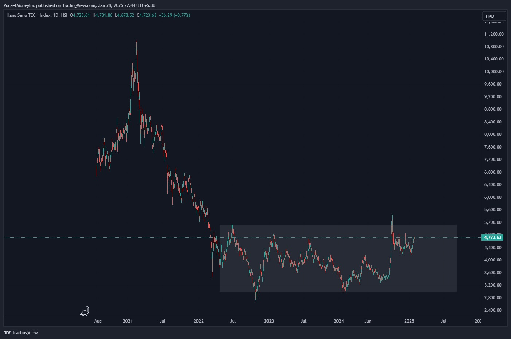
Example of Late/Extended Stage 1. Yhis is China Tech index. Now that everyone is talking about Deepseek, this is where the impact will be seen , possibly 🙂.
This is a 3 year stage. 3 years !!!!
10:46 pm
30 January 2025
+91 95459 03445 left
31 January 2025
Konal
The way market is moving up today reminds me of the Exit poll day 🙂. Everything seemed rosy that day till the real results came out.
Keep it simple. Let the events pass.
Invest peacefully1:07 pm
Konal
Indian markets are heading into the 2025 budget with a WEAK overall medium and long term structure.
A good budget is needed to repair the sentiments and structure. Else brace for a 2025 where looking at your portfolio won't be a pleasant thing 🙂.
At least for the Buy and Forget Camp !
Hoping for a SANE budget !
That's all for today !!!2:20 pm
Konal
<Media omitted>
The Ratio of Nifty to Gold has moved lower.
Simply put, high chances that Gold will outperform Nifty TILL we reach the green band from where it has turned many times in the past.
Outperformance can mean 2 things :
Gold falls less compared to Nifty, if oth fall , or
Gold moves up more compared to Nifty10:19 pm
1 February 2025
Konal
<Media omitted>
Response of sectors post budget12:34 pm
Konal
Market is telling you where you money should be12:39 pm
Konal
BUT, the money in where it should be , should go in over a period of time. Not toddayy, Not in a month.
Baaki, paise aapke, marzi aapki12:45 pm
Konal
<Media omitted>
This is how the %change of stocks appear to be right now. Kinda nowhere. So it will take time see how things are12:47 pm
Konal
At EoD, this is how the names and their changes look like.
I am ignore things that did stayed in -1% to +1%5:44 pm
Konal
📎 Media not available5:45 pm
Konal
<Media omitted>
The Good !5:46 pm
Konal
<Media omitted>
The ones that did nothing much. This number is a lot. Which in a way tells us that market has already discounted this budget to some extent.
Now some of these will move to green or red as time passes.5:51 pm
Konal
<Media omitted>
This is how the broad sectors performed today.5:54 pm
Konal
<Media omitted>
One day isn't enough data. So look at the change in each sector over the last week.
The biggies don't buy on the event day. They buy before and after !!!
But they know beforehand !5:59 pm
Konal
Earning money is easy. Growing it is tough.
And now if you want to grow your hard earned money, then do some analysis based on what the above data is saying.
Opinions DO NOT MATTER.
Emotions DO NOT MATTER.
Price matters !!!!
That's the start of the budget analysis.
Have a wonderful weekend .6:06 pm
Konal
<Media omitted>
The first sector to attempt moving into Stage 2 is FMCG. Still not there. So it will move up and down for sometime.
For all you Long term players, you need to take a note of this, find thematic funds, ETFs for this sector and be ready.
How smartly you play this, is upto you 🙂.
I have automations that can help, but doing it yourself isn't tough either !
This is also an example of Late Stage 1 . Need to see which direction this resolves9:26 pm
4 February 2025
Konal
Gold and Silver are again up today !!!
Not sure how many are part of this rally .
I hope you are !10:55 pm
5 February 2025
7 February 2025
Konal
<Media omitted>
This is my hypothesis for now ! With possible timelines.
It need 1 day to for all market hypothesis to go down the drain11:37 am
10 February 2025
Konal
Weekly Update
From what i read over the past week, below are the key pointers i am working with for the next few weeks
1. Falling markets : Not a surprise. Some say valuations. Some say tariffs. Could be anything/everything. But the only silver lining is, India is not the only Emerging market that is falling. So the fall is partly to do with over-valued small and mid cap stocks but more to do with Dollar getting strong.
2. Small and Mid Caps : The last time similar situation was there, the next 3 years, this category gave 0 to negative returns. So in case you hold substantial amount in this category ( ETFs or MFs), you might want to be aware of what might happen. Way out ? There is bound to be a bounce in the coming weeks months. Try to use that to exit partial positions. Some of you were explicitly told to cut 5% positions each month/week in September in this category. But , meri sunta kon hai :-)
3. Gold and Silver : They are doing what they do in falling markets. Slow and steady rise. If you haven't entered at lower levels, only Silver is offering an entry right now. The Gold Train has left. Wait for it to retrace.
4. Market Breadth: Only 3-4 sectors are trying not to fall in this market. Rest everything is in the re-set mode. The sectors are : FMCG, Consumptions, Auto, IT and Nifty India Digital. Any money that you plan to bring for short to medium term, via stocks, etfs, MFs , should ideally be in these sectors. Apart from this, Finance is probablyan emerging dark horse. Sector trends takes 2-3 months to setup and then if they do setup nicely, stay for another 12-18 months.
Quote : You are not panicking in this market since it is falling. You are panicking, since you did not have a plan . :-)
I guess that's enough for today !11:10 pm
11 February 2025
Konal
Update to Sector list :
FMCG has broken down today. So no more money can go into this for med term as of now.
FMCG and IT are best defensive plays for long term investments ( 5+ years) . But this is not what i am talking about as of now11:47 am
Konal
<Media omitted>
FMCG.
1 down. 3 to go11:51 am
Konal
Markets are a funny funny place.
If I tell you there are 200.5 billion stars in the universe. You will believe me.
But if I tell FMCG is weak, due to real data , and if you like it, or are invested in it, you will Never believe it !!! 🙂11:57 am
Konal
When the ED if ICICI Pru says something, you should listen carefully 🙂3:00 pm
Konal
A lot of talk about Mid and small caps today. Understandably so.
Try not to react.
If you haven't sold earlier, ignored the signs, you are late for sure. Try not to sell at the bottom. At least wait for a bounce.
Evaluate your mid and small cap investment.
If you are in the positive, then decisions are easy. But still do not be in a haste.
See if you can slowly move out and re-allocate to other assets. Even other assets are falling
Have a profit number in mind. The moment portfolio breaches that, sell. So you take some money back.
If your investments are in negative, then there is some work to be done.
Check the companies where your money is. If those are sound companies, then live through the pain.
When the market bounces, again evaluate.
Respond to situation. Do not react !!5:24 pm
Konal
<Media omitted>
Today the fall was wide spread. The fall stops when the last bull gives up 🙂5:25 pm
Konal
<Media omitted>
This is one of the algo scans that give me the number of stocks to consider . These are strong stocks in markets due to the algo conditions.
See how strength is tapering off from June6:36 pm
Konal
<Media omitted>
4 years of backtested numbers. Look what happens when this number reaches close to 100 . Will history repeat ? 🙂6:39 pm
13 February 2025
Konal
Maybe, a big MAYBE, today is the bottom for the next 10-15 days or so.
If there is an Up move, the quality of the upmove will tell if we are coming back to these levels and maybe go further down.
If you are a lumpsum investor, 10-15% of your total corpus can be added today.
If we fall more, at the next attempted bottom, more can be added. If we go up, you will get many chances to top up.
The KEY is , go slow but Keep Walking !!!!2:12 pm
Konal
<Media omitted>
IT Index. Surviving at the border. If it falls more, any new investment in this should be stopped till it settles again. If you have old investments in good gains, taking some home might not be bad. Can be brought back in once things improve3:36 pm
14 February 2025
Konal
<Media omitted>
What will you do ?? Like for A and heart for B 🙂11:54 am
Konal
If you are on this group, make use of it and participate.
Else you will make the same mistakes like you did last time.
Today, mid and small cap is at the same level it was in Dec 2023.
Stocks will be much lower.
It is likely the entire gains you made from past 1-1.5 years have come back to 0.
Can be avoided 🙂
The choice is yours6:32 pm
Konal
And the only way to participate is to provide your Reactions to post. Sometimes at least 🙂6:44 pm
16 February 2025
Konal
<Media omitted>
Just when SIPs should start again, people are stopping them 🙂
They should have stopped in Oct/Nov if not in Sept ( since no one can catch the top )1:20 pm
Konal
Time to re-start SIPs is just around the corner. But you need to be careful of the instruments that you put your money in.
It is very Unlikely, very very unlikely that the winners of the last 2-3 years will again be the winners of the next bull cycle.
Do your research.
No one loves your money more than you !1:22 pm
Konal
Below is the link to one of my dashboards for analyzing the current market situation.
It has a lot of information that you might not understand at first glance. With time, it will get easy 🙂
For now, just focus on the indices and sectors above their 50 day moving averages.
There is none and this tells us that in the short term, Enjoy your beer/coffee and stay away from markets
SIPs and that too spread over sometime is the best way !!!
Good night and take care !9:34 pm
Konal
<Media omitted>
Listen to data ! It helps !9:35 pm
19 February 2025
Konal
If you are happy with seeing a 2% jump in micro cap today, this is how that 2% fits into the larger things 🙂3:53 pm
Konal
📎 Media not available3:53 pm
Konal
Don't get me wrong. I am a super optimistic person. But there is time to be optimistic and there is a time to sell early and wait for new opps to re-invest .
Or if you have steady and enough supply of money month on month, then chill.3:56 pm
21 February 2025
Konal
From this point onwards, the China tech rose around 22-25% .
Today i have exited some 60% of my total holdings in this.
Reason : Everyone is talking about this now. So a cool off is needed.
Just like i did for gold.
Now will wait for it to come down before i start SIPing it again4:25 pm
Konal
Repeating : Once a trend starts in a sector, it stays for a good 12-18 months.
Love it or hate it , but it seems like China is the world favourite for now .
Have a wonderful weekend.4:27 pm
Konal
<Media omitted>
Now from late Stage 1 , it has moved in to Early Stage 2 . Just for context4:34 pm
25 February 2025
Konal
If there was any stock that was below your buying price and few days ago you thought that you should have exited this earlier, please do exit if it comes back to your buying price.
Then take a coffee break and if you still like it, go ahead and buy again but with a free mind. But first get rid of it if you get a chance 🙂.
Thank me later 🙂10:12 am
26 February 2025
Konal
If you notice, most of the news is depressing right now wrt markets. It usually is at the bottome or temporary bottom to forece people to sell at the end.
The most important thing now is to separate what is your investment versus what was a short term bet that converted into a long term investment since you did not act on time 🙂3:05 pm
Konal
There are no sectors in a good shape right now. Will update when things improve in any of them. But that would mean a little away from the bottom.
As some intelligent people say, only three people catch the bottom :
1. God
2. The guys who create the bottom
3. Liars ! <This message was edited>3:07 pm
Konal
<Media omitted>
This is a chart of Nifty. When we were rising you heard a lot about Retail is enough to hold the markets high 🙂.
The red columns below are the Net amount sold by FIIs starting September .
Sambhaal liya retail ne 🙂3:18 pm
28 February 2025
Konal
Today is the kind of day where you too up a little to your ling term investments.
A little.
And only to names where you know the story hasn't faded , just the price has corrected9:52 am
Konal
I was analysing the Small/Mid and Micro cap indices.
It appears that the temporary bottom can be made in these anywhere from now to about -4/5% below.
Post which, if strength does not return to markets, then we can also see another dip of 10-15% from current levels ( most likely after a small bounce that lasts 4-6 weeks.
The second level is the place where lumpsum can go into Small/Mid Micro cap names for next 3-5 years.
But still the best approach is to keep adding money slowly and small packets as we move sideways or down.
Happy Weekend !!!!8:20 pm
Konal
Again this group is open to anyone who likes such updates. So please feel free to tell your friends8:20 pm
3 March 2025
Konal
Almost everyone is thinking about the bottom in the market ?
But when that bottom comes, do you know what you will do ? Or what you want to do ?
At that time, you will not be able to think clearly. So make a plan with names, amount and strategy of deployment ( one time, SIPs etc )11:09 am
Konal
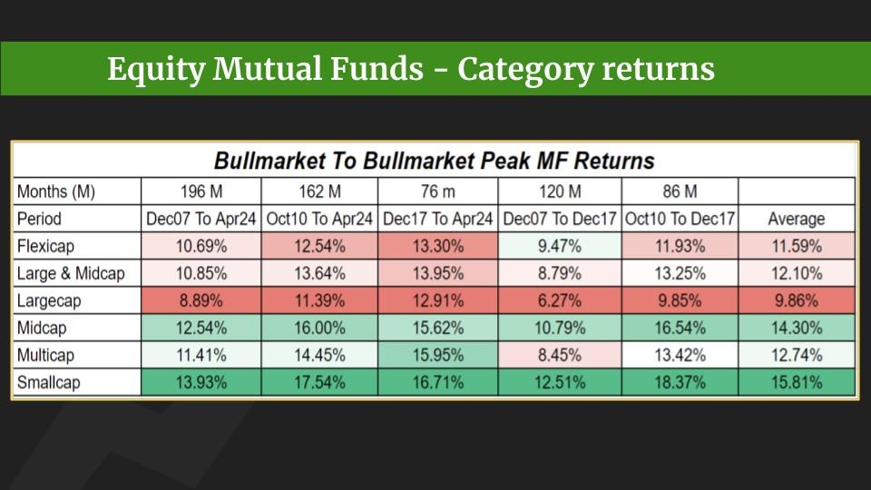
Smaller the cap, better the results. Thoda timing aur seekh jao yahan and then this can improve further.
Do notice the months it took for this.
6:28 pm
5 March 2025
Konal
<Media omitted>
Identify the outlier ? And think what it means1:22 pm
Konal
Also, if you Promised God that if a certain stock comes back to cost or close by, you will sell it, please do keep the promise 🙂.
Buy it again the next day if you are feeling greedy or confident. But first sell if you get a chance.
And the next time you buy anything, keep a level in mind where you will exit if things do not go your way !1:28 pm
9 March 2025
Konal
No major updates for the week, Business as usual.
If I were you, I will look at the below dashboard every 2-3 days to figure out how things are.
https://chartink.com/dashboard/11375511:57 pm
Konal
<Media omitted>
In this dashboard too, I will only focus on this section. This will tell you the sectors that are strong for short, medium and long term . From left to right respectively.
My focus is only on stocks from Finance, Metals and Pvt Banks.11:59 pm
11 March 2025
Konal
Today seems like a day when you may topup some of your broad-based MFs or ETFs.
Nifty, small or midcap MFs.
If i have 100 to invest, i will add ONPY 20today with very little expectations of returns for the next 12-18 months10:25 am
Konal
# 3. Gold and silver. They are again setting up nicely. They keep doing this and slowly move up.
If you started SIP in them when i sent the above message, you would be UP on at least something in this market 🙂8:44 pm
13 March 2025
Konal
<Media omitted>
The orange lines are drawn when the markets were correcting in 2022 . They say, it usually happens in 3 waves.
We are not even out of the second abhi toh ( if this pattern is to repeat this time around as well )5:42 pm
17 March 2025
Konal
The below message is for your STOCKS holdings only. Not for index of MFs.
I never like to average anything lower. But i also don't like to hold anything that is a lot below my avg buy price.
But .
If you are stuck with some stocks, and they are now down a lot, you may want to average some of them now provided ,
1. You consider the addition as a trade with strict Stoploss. So if new position also starts giving you a loss, you exit the new position . If you cannot exit and book loss, DO NOT DO THIS.
2. The stock cannot be a kachra stock. Prefer large or mid cap names for this approach.
3. If an averaged stocks comes back to cost, thank god and then please follow a stoploss 😀10:20 am
Konal
If you are tempted to do this, first try to remove the temptations. Best approach.
If unable to do so, and are trying to follow the above, please please add slowly, over few days.
If the names are from relatively stronger sectors like finance, metals , banks, chances of success is bit more.10:27 am
Konal
Lastly, hope has no value in markets.
The leaders of last cycle, defense , railways, etc might not be the leaders of the new cycle. Don't be overly hopeful, if price is going against your hope.10:28 am
+1 (716) 320-1910 joined using a group link.
Konal
The above is also not applicable to stocks which you have bought as long long term investments.
But if you bought something, it came down while you were hoping otherwise and now you are a forced long term investor in it 😀, then that's the stock where you can do this.
For pure investments, you can buy anytime as long as you believe in the story based on which you bought.11:14 am
Konal
📊 Which is the first sector to go above it's 200 day moving average ?
◯ Metals (5 votes)
◯ Banks (0 votes)
◯ Nifty 50 (1 vote)
◯ Finance (0 votes)
8:01 pm
18 March 2025
Konal
The answer to above can be found here.
And for investors, it is important that you know what is above 20010:17 am
Konal
Today is the kind of the day where underperforming stocks usually go up to lure people to average into them.
Yesterday was the day when you should have identified and maybe bought some of the ones you wanted to average. Refer to my messages above.
Try not to get FOMO. Think and act if you are tempted to.11:27 am
Konal
If today is actually the start of a short term bounce or rally of 5-8%, then some of your stocks might get close to your buy price , even without averaging ( depending how far they are ).
Please think in advance what you wish to do. On the spot thinking does not work11:29 am
Konal
<Media omitted>
The answer is Finance.3:36 pm
20 March 2025
Konal
This message was on 3rd. 4th turned out to be the temporary bottom after which Nifty has gone up 5%.
In case your stocks have not gone up more than 8-10% in this rally, you might be stuck with real laggards.
Have a plan in place.1:29 pm
Konal
I wish some of you added a little here and there.
Even if you did not, you will get plenty of chances.
But the above is what is called buying a little rise after the dip 🙂1:31 pm
Konal
and lastly, this is important 🙂1:31 pm
Konal
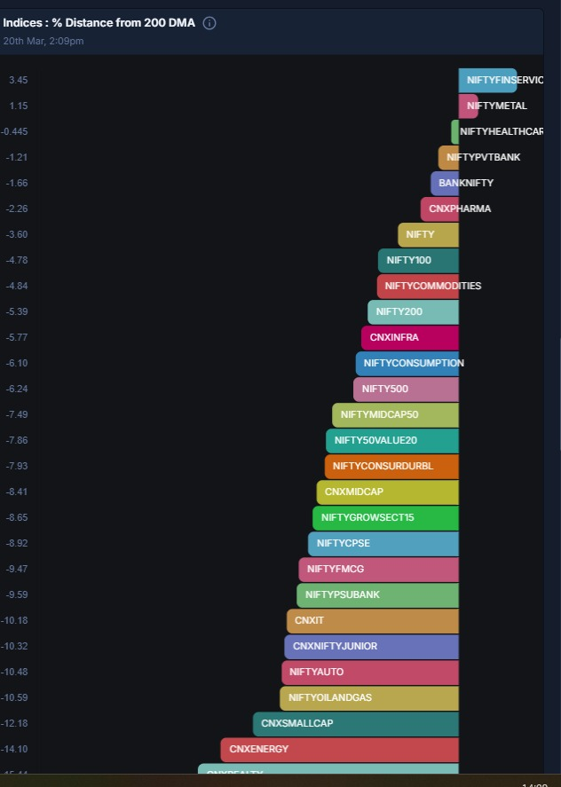
Which is the second sector to go above 200 DMA ? And which were the sectors we were focusing on ?? Looks like some FII is tracking this channel 🙂
2:10 pm
Konal
Anyways, in a downward markets, what moves up first can be the POTENTIAL leader of the next bull run !
Will they fall ? Absolutely ! But probably less than others since big money is in them.
So the investors out there, FOCUS on the stocks in this sectors. OR the ETFs of these sectors.2:12 pm
21 March 2025
Konal
The broader market, Nifty 500, has moved above 50 Day avg. But it is still below 200 day avg.
This means that from the last few days for maybe about a month or so, this is the market for short term players. Who can go in and out of a stock quickly.
For long term players, you can slowly buy quality names, etfs etc based on your conviction. But slowly.
Long term players might have 4-5 months to keep adding qnd building their new positions.4:20 pm
24 March 2025
Konal
Please do not get complacent since the market is moving up. It is very difficult to tell if this rally will take us to another All time high or we can fall more in the coming months.
Have a plan in place and have levels where you will exit loosing positions .
This is the relief rally most of us were hoping for 10 days ago 🙂.12:14 pm
25 March 2025
Konal
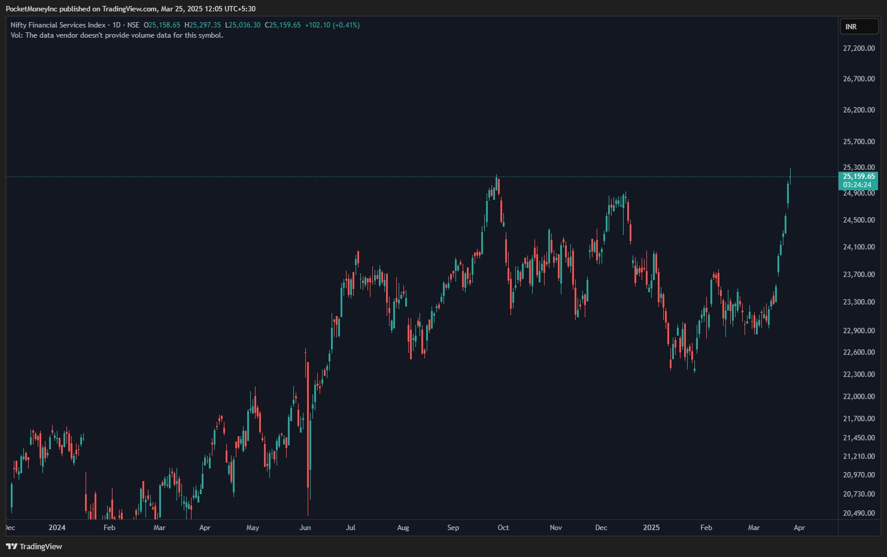
The first sector to go above 200 DMA ... and now the first sector to create a new All Time High. There is some Method in the madness 🙂
12:09 pm
Konal
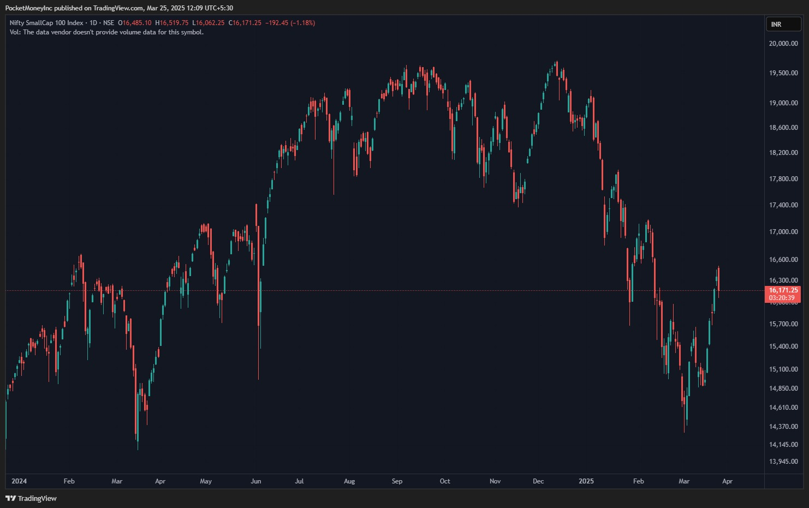
And this is SmallCap index.
Think where your money should be
12:10 pm
27 March 2025
Konal
Before i forget, do read about the Tax Harvesting that some people do for their long term and short term gains.
It may need some reading and calculations.
And you 2-3 trading days remaining to implement it12:32 am
30 March 2025
Pp Prateek joined using a group link.
Pp Amit Saxena joined using a group link.
Konal
<Media omitted>
No major weekly updates this week. things are progressing normally.
There is some short term improvement ( sectors above 50 DMA ) .
The strength pockets still remain what we identified few weeks ago. Fin, Banks, Metals8:15 pm
Konal
You might see a lot of up and down this week due to the e US Tariff news ( the only thing that will dominate market sentiments for weeks to come )
Part of your portfolio should have moved up. Rather than being in a hurry to sell them, focus on them.
And for what has not moved up, do some deep dive.8:17 pm
Konal
This is a market for SIP and people who are afraid of a further fall.
Not for the ones who get FOMO and are greedy for another All Time High and invest a lot in one go8:20 pm
Konal
📊 How much has your has your portfolio recovered in the last 10-12 days from the bottom ?
◯ More than 10% (0 votes)
◯ More than 5% (3 votes)
◯ 0 - 5 % (5 votes)
◯ No improvements (0 votes)
8:25 pm
Konal
Also, as a practice, please record the portfolio value each Saturday or Sunday. The more granular, the better.
You will know which stocks/ Funds are really moving things up or down.
This is important since now in March, you will not even know where your portfolio was in September 2024 ( the highest point ) and how much is it down <This message was edited>8:27 pm
Konal
<Media omitted>
Compare your results with the names in this pic I have marked the ones that are broadbased indices. Where do you stand ?
Left is the month on month change and right side is YTD8:51 pm
Konal
That's all for this week !!
Have fun nice people ...... after you make a mental plan for the week ahead🙂 !!!!!8:54 pm
1 April 2025
Konal
This has started 😀😀😀.
It is all going to be tariff tariff tariff based speculative movement.
And i have zero knowledge of this and zero interest to really break my head on what's good or bad for one nation of the other.
I plan to follow price with strict SL . Even for new investments.
No more no less ! <This message was edited>11:16 am
3 April 2025
Konal
Our markets were neutral to the tariff chik chik so far.
By the end of the week or next week, we'll know what's good and what's not for US, us and everyone else.5:48 pm
Konal
There is always a Bull run that is going on somewhere.
Can be gold, China, japan, bonds, etc etc ...
The smart investor finds the right instrument at the right time.5:49 pm
Konal
<Media omitted>
US Markets ! Compared to this, our markets now seem super strong 🙂7:08 pm
4 April 2025
Konal
Yesterday a friend asked me if this is the time to buy the US dip. That led me to do some historical analysis.
Sending some interesting data points . Read with some interest at least 🙂12:59 pm
Konal
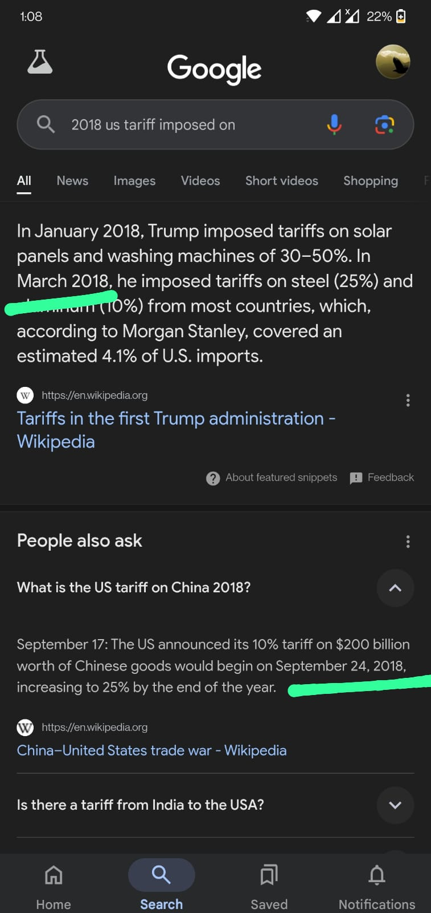
In 2018, US imposed tariff on China. Dates mentioned above.
1:00 pm
Konal
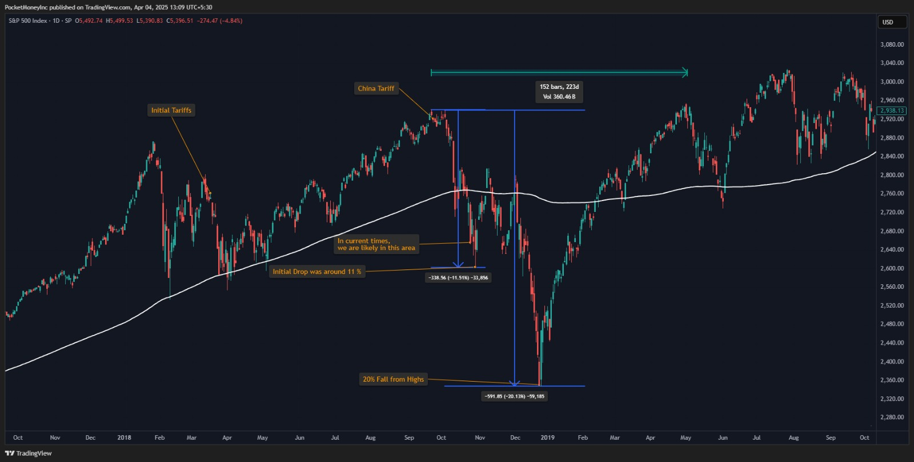
Same 2018 S&P chart with some markings. The White line is 200 Day moving Average ( the only Holy grail ). Remember this picture and structure before seeing the next one
1:10 pm
Konal
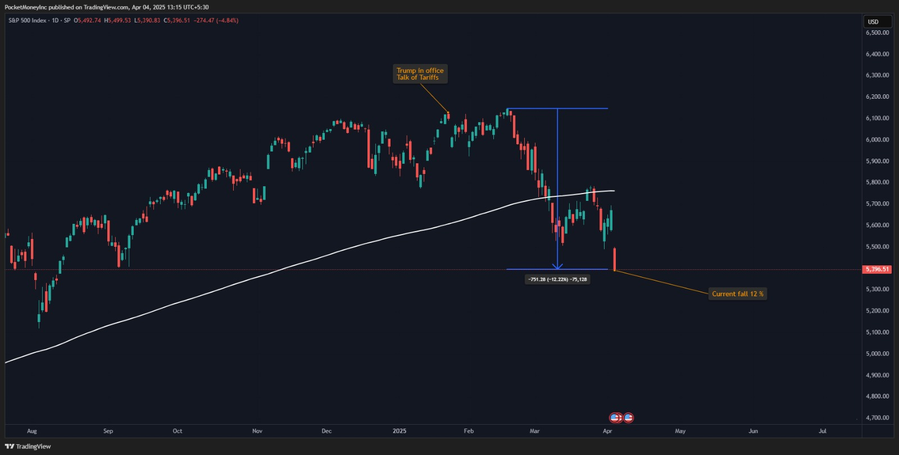
Current times. Now play the Find The Difference game with 2018 and today.
Things are never exactly the same. But they can be similar
1:16 pm
Konal
No one knows if History will repeat itself.
All you can do is not be in a hurry and at the same time, not assume that everything will fall.
Know your Stocks. Know your STOPS !!!1:21 pm
7 April 2025
Konal
Whenever market is trying to find its right value, these kind of massive movements are common.
But as long as a lot of stocks and sectors stay below 200 DMA, ONLY small SIP , that too if you are a compulsive kind of person.10:59 am
Konal
Anyone who feels we have fallen enough and cannot fall more, please do look at this image.
If you have FOMO of missing the bottom ( if this is the bottom as per you ), then buy a little so yo u don't feel bad.
But make sure any buys currently are in ETFs or MFs. Avoid stocks , unless you are ABSOLUTELY sure !!!12:47 pm
Konal
I usually do not predict, but, as of now, I feel the absolute bottom might be formed 5-7% below from here , that is Nifty at around 20,000.
In between some up rallies for 3-5% is also possible. Those will be possible offloading opportunities. But if you have not excited till now, you might as well hold them for the next run or till they turn profitable12:56 pm
Konal
It appears US Bottom is made for the next few days or maybe a few weeks for now . Now the Jumping around of prices will start but hopefully the low is in place . So some sanity should return
Can it go down further ? Who knows ! 🙂
The fall so far is approx 21% from top. In the image from 2018, it was 20.xx %7:40 pm
8 April 2025
9 April 2025
Konal
RBI cut interest rates today.
Been 2 hours but market is not cheering this move yet.
I really don't know what this means, but i am mentally preparing for a range bound dull markets for the remainder of 2025.
With no or little expectations of returns on anything invested in 202512:22 pm
Konal
The drama has begun .
Now it could turn into a news /fake news etc driven movement.
Perfect popcorn and coffee time.
Keep your SIPs on and chill . Nothing is going anywhere 😀😀11:19 pm
Konal
Can i be this right and still be so poor ? 😂😂😂😂😂😂11:23 pm
10 April 2025
11 April 2025
Konal
📊 Tariff Drama: Who will BLINK first ?
◯ US (0 votes)
◯ China (0 votes)
◯ Retail (6 votes)
10:26 pm
15 April 2025
Konal
With time, will try to give out some rules so that the Universal winner of this poll does not have to blink in these world theatrics 🙂1:34 pm
Konal
Till then some updates .
This rally attempt has more strength in it compared to the previous attempts. But everything is not Global in nature.
I have started nibbling on ETFs and some stocks from my preferred strong sectors.
If you are stuck from higher levels, you can let the positions stay as they are but at least change your mindset and look for new names and current leaders.
And when i say, this rally is strong, it can easily go up 3-5% and fizzle out if situation is not conducive . So any new positions, have a Stoploss level in mind so you don't blink before the world does !1:39 pm
21 April 2025
Konal
Since we are moving up, i don't have many updates.
Nifty Finance and Nifty Bank are at All Time High.
If you started investment in these at lower levels, then keep your SIP on.
If you haven't, and were only hoping for your existing names to outperform, maybe you need to reevaluate .
For stocks, few names from these two sectors could work for a year or so. Find the best names and add as and when they retrace a little9:54 am
Konal
Please please please do not ignore this.
If you are at break even on some weak names, please sell them first, take a day to think and buy again if you want to.
The names in your portfolio that turned gree the first are the strongest names. The ones that are still red, well .. the choice is yours
No one knows what will work in future. But stocks from strong sectors have a higher probability of success.11:13 am
Konal
Update on Gold : From this date, Gold has moved up some 22% , which by the way for Gold is nice, but a lot🙂.
Now:
1. If you have missed the entry, WAIT for a DIP to add.
2. If you have captured the move, there will be a DIP. Have a Stoploss in mind so you do not give back all the profits.
If you are in none of the above, then you might trust my posts a little more in the future 🙂7:10 pm
24 April 2025
Konal
Small and Midcaps have seen a decent move of 10-13% from the lows i think.
Mark the small and mid cap stocks in your portfolio that have ONLY moved just this much or lesser. These are the ones that will fall again faster once the rally halts for sometime.
This rally is mostly aided by nig names so far. If the smaller ones don't join soon, this rally could fade away ; either sideways for next few months or , worst case, can even go down.2:08 pm
28 April 2025
Konal
I am occupied with some personal work for some days.
So not tracking the markets closely.
Updates will restart from next week11:11 am
23 May 2025
Konal
Based on how i measure Bull and Bear market, we are at the Line of Control at present.
At this time, markets will usually do up and down till it gets some motivation to move in either direction.
Ideally from here, leaders of the upmove, will move up, while others will stay here or move down to maintain balance12:22 pm
Konal
I still maintain, tiny , small , small to midcaps won't perform so well.
We will see out performance by mid to large caps.
So if you small cap funds are back to good levels, you may want to think of a plan of action for them.
Leaving them as it is and under performing for next 1-2 years isn't the best approach 😀12:22 pm
Konal
I am currently tied up with post shifting activities, so will be bit less active here for some more time.12:23 pm
Konal
This still holds true for certain category of stocks.12:24 pm
29 June 2025
Konal
Ok !! I am back. Shifted and settled in Pune.
Lets see where things are.12:48 pm
Konal
The below are some important data points and messages. Dhyaan se padhna 🙂12:51 pm
Konal
<Media omitted>
Performance of various broadbased and Sectoral indices over the last 9 months - approx from date when markets topped up12:58 pm
Konal
Look at the marked broad-based indices. These are mostly the indices that most MFs follow.
These are up 0-4% in this duration.
How much is your MF portfolio up during the same time ?1:00 pm
Konal
Why is the above important ? To know which MFs are better than the index during the same duration.
And if they really deserve your money ? Or just plain ETFs are better in terms of returns ?1:03 pm
Konal
Majority of indices( including Nifty 50 ) have not yet crossed the highs.
Microcaps are way of the highs and those funds would be the least performing for you.
Fortunately, this is what we have been talking about on this channel.
But things have improved. A lot. inspite of all the world drama .
So what next ?? That i will post in the evening 🙂1:07 pm
2 July 2025
Konal
The 90 day US Tariff break is ending in 10 days i assume.
Expect Up and Down. For really long term players, there could be a nice dip to add / avg . ONLY in the best names. Not in your mistakes of the past12:38 pm
4 July 2025
Konal
📊 In India, which do you think will be the next big theme in next 3-5 years ?
◯ Domestic Tourism (1 vote)
◯ Domestic Consumption ( Semi Luxury ) (4 votes)
◯ Cars (0 votes)
◯ Medical Tourism (1 vote)
◯ Defense and Infra (10 votes)
1:29 pm
7 July 2025
Konal
You deleted this message11:50 am
Konal
Close contest. You could have selected more than 1 as well.
Now how to make money with this view. Long post
Defense and Infra :
Safe Players
Both Defense and Infra Index have their respective ETFs. So where to invest is easy. Not sure if there are any Thematic Mutual Funds for these.
Look at the composition of both these indices on the below links and see if they really comprise of companies that you thought were into this domain.
* Defense : https://www.niftyindices.com/indices/equity/thematic-indices/nifty-india-defence
* Infra : https://www.niftyindices.com/indices/equity/thematic-indices/nifty-infrastructure
Ok, so the half of you who are still reading :-), if you like the composition of the index, then it comes to how to time it for next 5-6 years as you have suggested.
In a sectoral bull cycle, price of the index will come back to its mean or average price at regular internals. Not a rule but, price usually visits it's
* 20 Day Average once every 2-3 months ONCE the trend starts
* 50 Day Average once every 3-4 months ONCE the trend really starts
These are THE best places to add or buy.
Most platforms have alerts that tell you when something is close to a moving average. Use them to time entry.
An alternative approach, is to do the SIP on the 1st of every month. No harm. But the world changes a lot within a month now a days.
P.S : You can always use my tool to time and execute the entries :-)
Aggressive players :
In the same sector, try to make a list of the strongest names. Will need some research.
Once you have the names, you can follow the same approach as above.
Do an SIP in the stocks of your choice ( Again, my tool is custom built to help for this approach )
If the sector moves 10%, the strongest stock in the lot will easily move 25-30%.
The strongest stock isn't always the one with the highest allocation in the sectoral index. Hence, this approach needs bit of research and analysis.
Exits ( something no ones talks about )
If any of the sectors go below the 200 Day Moving average, you sell everything first and then analyse and start the process again( maybe for the same sector ) once it settles down.
There is no fun in living through the drawdowns - like from Nov 2024 till now.
Lastly, a sectoral trend usually lasts 18-24 months. Not a rule, though
Get in early and regularly, enjoy the ride and get out before it is too late !11:51 am
Konal
Another important thing. If the majority of you are thinking of a particular sector to move, it is highly unlikely that it will move right away. Because, very likely, half of India is also thinking the same thing
Hence, expect a decent pullback and use it to add systematically4:37 pm
14 July 2025
Konal
For those of you who have MFs for Nifty 50 stocks, today and maybe the next 4-5 days is when you should be adding more to it.
Why ?
Because today Nifty is around its 50 Day moving average - the best place to add in an uptrend.
Same logic applies to MFs that track Midcap or small cap or any thematic sectors.6:54 pm
Konal
📎 Media not available6:54 pm
15 July 2025
Konal
China is looking interesting.
But risky in the short term probably due to tariff chik chik .12:05 pm
18 July 2025
Konal
Nothing much to update. Normal up down so far. Portfolio isn't moving much. But nothing seems to be wrong in the markets so far.
I am trying to build a custom list Hospital and Insurance stocks.
This would be my theme based MF where SIP will go into each of them based on some algo logic.
Will share the names here once i am done.10:54 am
Sgsits Arti rai joined using a group link.
Konal
This still holds true. Sooner than later all indices , midcap, small cap, etc will come to this MA. Time your entries .
To know which broadbased indices are close to 50 MA, you can look at the widget "Indices : % Distance from 50 DMA
" in the below dashboard
https://chartink.com/dashboard/1137551:14 pm
Konal
<Media omitted>
Pretty sure None of you paid attention or acted on this 🙂🙂3:33 pm
21 July 2025
Konal
<Media omitted>
When the Kid surpasses the Dad .
Blinkit now bigger than Zomato6:24 pm
25 July 2025
Konal
<Media omitted>
Returns in the last 12 months10:36 am
Konal
In the long run everything goes up they say.
But can you guess the return of Small cap index in the last 12 months ?
Staggering 0.5% approx.
And from the looks of it, if market does not get a good news soon, there is a chance of a second dip again before the rally picks up next year.
I would be careful, very careful. Maybe book some gains and add again if it falls in a disciplined way. If i doesn't add the 10%-20% sold positions a few points higher.
But eventually, everything moves. That is for sure 🙂10:37 am
26 July 2025
Konal
<Media omitted>
Why am i cautious now ??
This is price chart of Nifty and the short term moving average of price - 50 days
I have marked the historical instances when price was close to the Orange line9:39 pm
Konal
What can happen ? Now one really knows.
But if you observe the times when it was a Kiss and Go up again versus continue falling, you will find that the main difference is How LONG did the price hoer around the orange line. The more time it spends there or below, the riskier things are in the short term.9:41 pm
30 July 2025
Konal
Tariff News .
If it is going to be bad, then we will breach the orange line and do down, which was told to you earlier. If it is good, there could be a minor down move that does not sustain.
Time shall tell !8:58 pm
Konal
<Media omitted>
Till then , this is some data of where the impact might be .. India is marked8:58 pm
Konal
Bad news comes as a surprise to you and me. Not to the market .
Follow the Orange Line ! 🙂8:59 pm
Pp Shruti joined using a group link.
31 July 2025
Konal
Given at at midday, Indian markets are still holding up well after the tariff drama news may suggest that the impact might not be broad based. And very very selective.
Not a bad day to add to some of your long term investments .
Buying around the Orange line ( 50 moving average) for long term is not a bad idea .
If things fail, you can get out at minimum damage11:18 am
Konal
Day end closing not so great. You guys did not buy worth millions to support the market. It's your fault. 😀
The confusion is back and excitement continues 😀3:32 pm
1 August 2025
Konal
Long ago, I posted about Gold trying to move higher. It did that smoothly.
Now both Gold and Silver have started a consolidation / pullback cycle that can last for 4-6 weeks. These are the best times to pick them up slowly.
Neither gold nor silver is a one time buy at the moment. Needless to say, these are mid to long term bets.12:09 pm
Konal
Today is the 6th day we are closing below the orange line. Not ideal .
Unless we get a really nice positive day soon, things can go down or go nowhere for weeks/ months.
Whatever happens, this is not a time to be a hero.
If buying/adding to existing positions, buy slowly and run away if you do not turn profitable soon on these buys4:10 pm
5 August 2025
Konal
<Media omitted>
So far I was careful. But now , with such news, I am terrified about the short term impact 🙂 . More careful now.
Never, ever believe news.
Trust the Orange line ( or give it a colour of your choice )11:56 pm
6 August 2025
Konal
Too many days below the orange line.
Short term players need to be careful now. Have strict SL.
Long term buy and forget players, the next 3-4 months might bring you some opportunities to add.
All lot depends on how tariff news is taken by the markets1:48 pm
7 August 2025
Konal
Markets did react to tariff. But not in a panic mode so far.
The signs of the news were probably there from the day i posted this.
The impact is mostly before the news not on the day.11:31 am
Konal
Now the quality of upside bounce will tell us wheather we are heading down for the remainder of the year or flat to up.
The first hurdle is price moving above the orange line.11:32 am
Konal
📊 Which sectors will come out as winners from this tariff drama ? Multiple answers are allowed
◯ Banks and Fin (0 votes)
◯ Defense (2 votes)
◯ Fmcg (0 votes)
◯ Consumer Durables (0 votes)
◯ Agri Tech (0 votes)
◯ Solar wind Energy (0 votes)
◯ Autos (1 vote)
◯ Metals (0 votes)
◯ IT (2 votes)
◯ Pharma (2 votes)
2:34 pm
8 August 2025
Konal
No relief even today.
Keep looking at this image when you have time and see what can play out ?
Just by looking at the amount of time markets have spent below the Orange line, I suspect we are heading lower. Probably a repeat of the fall after Sept-Oct 2024
Unless of course some really brilliant news comes in.
There will be a bounce in the coming days. I won't trust that bounce now. I will use it to get rid of stuff I wanted to earlier but could not due to hope.6:12 pm
Konal
Anything i buy now WILL BE :
1. one-tenth of what i usually buy
2. Something i can hold till middle or end of 20266:14 pm
Konal
My entire hypothesis will change once we go above the orange line and stay there. Exciting times after that. Till then, chilling !6:16 pm
Konal
https://x.com/zerodhamarkets
These guys usually come out with nice stories.
If you don't read, you won't know,
If you don't know, your money won't grow !!
Waah Waah !!!!
Happy weekend !10:47 pm
11 August 2025
Konal
Only China is green in my portfolio 🙂
There is a bull market going on someplace in the world always .
Do not be averse to use these opportunities if you are a Buy only person11:15 am
13 August 2025
Konal
Possible to get some short term stability for the next week or so.
As of now i think the bounce might touch our favourite orange line and then come down again.10:28 pm
14 August 2025
Konal
<Media omitted>
These two chaps were champions of this field. See if their approach rings a bell with you.12:04 am
Konal
<Media omitted>
Might not sound pleasant to the Buy and Forget Camp .... but this is the return over the past 1 year of most major MFs.
Yes after 5 years they will be in line with Index returns, but 1 saal toh gaya na 🙂5:32 pm
15 August 2025
Konal
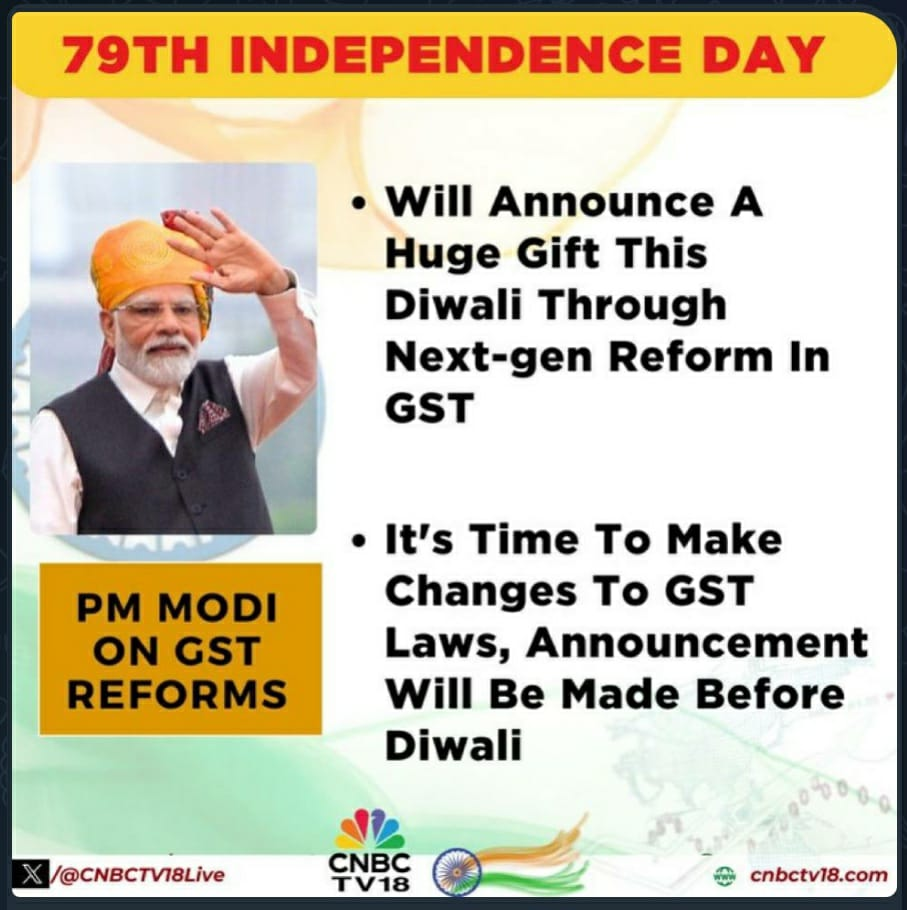
This along with few other announcements were made today.
Listen to everyone and everything.
But trust the market response to know if something is really going to create an impact.
10:31 am
Konal
The sectors that move with a thurst on Monday are the ones that can benefit from such news and actions.10:32 am
Konal
My initial guess is that this is a step to boost internal consumption due to the tariff drama going around.10:35 am
Konal
Govt is the richest spender in the country. Focus where they might be planning to spend.
Opinions mean nothing in markets.
Let the market confirm your opinion by moving in your direction
10:39 am
Konal
If you understand the above on this Independence Day, you are finally free 😀😀😀.
Happy Independence Day junta !10:40 am
18 August 2025
Konal
Autos is the best sector today.
But it does not matter how something opens on the day.
What matters more is how something closes.10:07 am
19 August 2025
Konal
<Media omitted>
Nifty with Orange line. We went below it on the marked arrows. And now after a month or so of peaceful time, we are back at the same level11:28 pm
Konal
So a short term index/ETF player can sell some old holdings in profit when we breach below the line and start again as it dips and add more when we move above the line.
You loose nothing and are happy to book some profit and then add the same profits in the same instrument at lower cost11:30 pm
22 August 2025
Konal
<Media omitted>
The fight continues ... around the line as expected.
Cautious yet hopeful at the moment.
Today doesn't look good. If we do not capture the line on Monday or Tuesday , things may get Shaky Shaky - Tujhi Chaal Shaky Shaky !!!2:14 pm
Konal
<Media omitted>
The GST news came out this week. If you look at the performance of different indices for this week( compared to last ), you will know the sectors that will benefit the most from the news.
Why have opinions alone when there is data to support it9:20 pm
26 August 2025
Konal
Market whispers before it shouts !!
Things looked shaky in short term, and today market took the path of least resistance.4:05 pm
29 August 2025
Konal
Market is decisively below the orange line now.
Short term players should have started exiting on the above day. There could be another temporary bounce in days to come. Can be used to exit weak or loss making SHORT TERM positions if you were hopeful initially that since you hold the stock it can not go down.
Long term players, sit tight and wait for stability to start adding positions.
Market is slowing approaching the Long Term moving averages ( 200 days) where you should be buying keeping 1-2 years horizon in mind11:01 am
Konal
After what has played out today ( or last few days) , to comfort the people and pacify the emotions, there can/will be some positive news that moves the market /sentiment up. The same thing repeats everytime 🙂.
Let's see if that happens this time as well.
Can happen now or after a few days, but will happen.
Don't get trapped 🙂 <This message was edited>6:54 pm
30 August 2025
Konal
<Media omitted>
How does your portfolio compare with these numbers ??1:40 pm
31 August 2025
Konal
<Media omitted>
1. Earning for beer
2. Earning for beer in Goa and Thailand and maybe Greece
3. Earning for kids who will have beer in one of these places
It is important to know the purpose to define the trading style. As I say, in the end markets always go up. But at 55 or 70 itne paison ka kya karoge 🙂8:01 pm
4 September 2025
Konal
So there is your news.
Now if we again go above the orange line and sustain there for few days, it means market likes the news and it is good.
If market start dipping again , even after a so called good news, then prepare for more bit more dip in the remainder of 20259:59 am
Konal
This on on announcement day .. Look at leading sectors ...10:00 am
Konal
<Media omitted>
and this is today . So market was telling us where to focus wrt this news ....10:02 am
Konal
<Media omitted>
these are the sectors that are down today. You know what this means by now10:22 am
Konal
<Media omitted>
The Love affair of Nifty with the Orange line continues. Look where the News took it and right from there it fell.
Even good news is not able to change the market sentiment.
Careful in short term.
Timing the market is not so tough, if you keep things relatively simple.5:48 pm
Konal
I have shared almost all that i have learned so far.
And this is all you need to know to decide when to enter, stay put and exit and then enter again.
So now my messages on this group will reduce substantially.
If any of you wish to leave the group, trust me i will not feel bad at all 🙂5:56 pm
6 September 2025
Konal
📊 From the image below, the news is 10 hours apart. What do you trust more ?
◯ IT companies will be taxed ? (0 votes)
◯ Friendship resumes and tariffs are rolled back partially (0 votes)
◯ The Orange Line ! (4 votes)
6:50 pm
Konal
📎 Media not available6:50 pm
7 September 2025
Konal
<Media omitted>
Because an overwhelming majority of you said that the Orange line matters, here is the medium term ( orange ) and the long term ( white ) moving averages for the Indian IT industry.
Whether or not the Itis tariffed, it looks super super weak to me already !
My money is not going into this one for now for sure.
BAD THINGS HAPPEN IN LONG TERM BELOW THE WHITE LINE !
This is an example of a sector and not the market in general9:00 pm
10 September 2025
Konal
On 25th July, Nifty went below the orange line in a decisive manner. The price then was 25020/30.
Today, it is again above the orange line .... and guess the price ? yes around 25000 .
But let us see how it closes ....
Short terms players can now be more active. Long term players can now reap the benefits of buying the dip10:30 am
11 September 2025
Konal
The big sectors are contributing to this rally. Banks, Fin, Auto, somewhat IT and metals.
Usually , such rallies last for some days and weeks.12:30 pm
Konal
<Media omitted>
Someone was shot in the US on camera. One the same day the Jobless Claims data comes out and does not look pretty !
The discussion everywhere is not about the data !
Just saying7:49 pm
12 September 2025
Konal
If we close around here on Nifty, today is day 3 of closing above the Orange line.
Today's closing might decide if this was an affair or a long term relationship between the two10:41 am
13 September 2025
Konal
<Media omitted>
It is neither Unpatriotic not anti national to look for investment opportunities outside India while our markets rest before the next bull run.
How many of you participated in the Chinese run ?
If not, ask yourself, why not ?12:53 pm
Konal
Please read this post carefully.
This is purely my opinion, and you may or may not agree with it.
The Indian stock market has many sectors.
Not all of them perform at the same pace, nor do they perform all the time.
Some sectors are slow and steady, making them great for a long-term horizon (2–3+ years).
Others are cyclical, offering opportunities for shorter-term plays (1–2 years).
Below is how I classify them — you can get creative with your approach.
For example, you can buy part of a sector for the short term and hold another portion for the long term.
Best Sectors for Long-Term Investing
FMCG / Consumption – While some parts are discretionary, people can’t go without food and essentials.
Pharma – Everyone wants to live longer, and this demand will only grow in the future.
Hospitals – There isn’t a dedicated index yet, but you can track sector performance. This sector benefits whenever fear or health awareness rises.
IT – If the future belongs to technology, this sector will perform. The companies may keep changing, so choose an index or ETF with the right mix instead of sticking to legacy names.
Defense – A fear-driven sector that works in cycles. In times of conflict, it can see strong growth.
Capital Markets – Whether investors make or lose money, brokers and exchanges earn in all market conditions — a true all-weather sector.
Cyclical Sectors
Banks & Finance – This sector runs on greed and fear. When the economy does well, banks and financial institutions usually perform strongly.
Metals – Highly dependent on the manufacturing cycle and government push for infrastructure and development.
Autos – Rising incomes, better technology, and lifestyle upgrades will keep this sector relevant. You can also include EVs here — there’s even a separate ETF for EV exposure.
Infra & Realty – Realty is tricky, but infrastructure often does well near elections when the government announces new projects and schemes.1:57 pm
14 September 2025
You pinned a message
15 September 2025
Konal
Now my app and product is mature enough to automate these investment ETFs in your own demat account.
But for a small fees.
In case someone is interested, do let me know11:22 am
16 September 2025
Konal
Bad news kept coming. Nifty kept moving up slowly. Crossed our orange line. Stayed above and now moving higher
Now the news will change to all good all around !
Enjoy the show ! 🙂
Trust the charts !3:18 pm
22 September 2025
Konal
I posted this on 30 jan 2025.
From this till now, Gold alone has moved 36% . And this is Gold !! Not a small cap stock 😀
In comparison, Nifty has moved 8% in the same duration.
I am slowly learning, there is a time for everything.11:55 pm
Konal
📎 Media not available11:55 pm
23 September 2025
Konal
Since Modi ji has asked to Be Indian and Buy Indian, I have sold the China holdings i had.
Now I am true Indian 🙂11:56 am
26 September 2025
Konal
Market is below the Orange line again. This happens a lot when the trend is not strong and smooth.
You know the drill now.
Short term players, less hopeful and more fearful.
Long term players, keep cash ready again1:36 pm
3 October 2025
Konal
After about 10 days, we are again above our fav indicator.
Probably, market is setting up for a pre-Diwali rally . I will hold this view till we do not dip again below the key average.
Aggressive above it . Super defensive below the same.
Long term things are looking good and nothing to worry7:07 pm
Konal
📎 Media not available7:07 pm
5 October 2025
Konal
<Media omitted>
These are the strongest sectors in the markets. If there is an upmove, this is where my money will be. Mostly in the marked ones.11:55 pm
6 October 2025
Konal
<Media omitted>
This is what you miss when you do not Love Thy Neighbour !!!! 😭😭😭😭
Gold Silver and China needs to pullback a little if you want to start building new positions. Or weekly SIP is the key2:25 pm
10 October 2025
Konal
It is NOT a coincidence that the Metal sector was strongest before the China Rare earth metals news came out today.
It is only slightly late to start building positions. Sectoral trends last 14-18 months.
Plan your bets. Spread them out for better averaging.
And if you can't do it yourself , join the automation bandwagon 😀😀 <This message was edited>12:10 am
11 October 2025
Konal
Very soon, it could be time to start buying China ETFs again.
The much needed dip has started due to the tariff drama again . Not sure till where it goes. Am expecting 5-7% down from here at least.
But do watch this space. It will be volatile and hence systematic buying is going to give better results.
P.S. : Always listen to elders like i did to Modi ji and sold China holdings. He seems like a great market veteran as well ! 🙂12:39 am
12 October 2025
Konal
Tomorrow, due to the tariff drama, we might again dip below the averages.
Mazaak bana rakha hai these US and China ke logon ne.
Is what others will say.
Our job, find out setups, and buy
And sell the ones that fail.
Life is simple. Let us see how we react by the end of the day.
All portfolios will take some hit for sure. Be mentally prepared9:24 pm
15 October 2025
Konal
The first non market post but maybe be useful to someone who is planning to book travel tickets.
Hence sending here.7:40 pm
Konal
Not a spam . I know the guy personally .
A friend has vouchers for Etihad Airways. He may not be using them. So if anyone is looking to book flight tickets via Etihad, he can do it for you with a decent 15% discount to the final fare. Tickets will be booked via the Etihad website only so they are standard tickets for any future date. If your are interested pls contact Anuj on 9686690108
Whatsapp msg works best.
Date of posting : 15/10/2025
Please do send to your groups if you know anyone who can benefit from this .7:40 pm
16 October 2025
Konal
ok. So the diwali rally did play out ......
Now , let's see how high this goes.12:47 pm
20 October 2025
Konal
Happy Diwali people
Contrary to popular belief, Lakshmi ji doesnt arrive directly today .
She arrives today for folks who have been invested from last Diwali, with patience 😀😀.
She also understands the long term and short term tax implications. So waits for years !
Buy Right, Sit Tight, with a stoploss in sight !!! <This message was edited>10:36 am
21 October 2025
Konal
I believe Gold and Silver are down by 6-9% today/yesterday.
The pullback was in the making.
Expecting some ups and down but largely speaking, these metals might not outperform other assets for some months now.
If you bought at the right time, then no worries.
But if you bought late when everyone was talking about these, then be mindful of the above.11:44 pm
24 October 2025
Konal
The commentary now might turn a bit negative.
Maybe some speculative news will also start doing rounds.
The markets are in a super bullish mode right now.
Small retracements are inevitable.
If trend changes, i will post.
Till then , chill and keep your selected SIPs going on.3:21 pm
Konal
I say selected because still the mid micro and small caps are not close to their previous highs.
While the largecaps are.
Adding money to largecaps right now, might lead to bit of underperformance.
But in the long run, everything goes up. 😀3:23 pm
1 November 2025
+91 88110 62742 joined using a group link.
4 November 2025
Konal
<Media omitted>
These are historical instances. But trust me, nothing changes with time in markets.
Never trust the news. It is there only to provide exit to the original heavyweights 🙂3:36 pm
8 November 2025
Konal
Those of you who are active on social media about markets must be reading a lot of content from 'super geniuses' about the AI bubble.
And how this is the same as the Dotcom bubble.
I am no expert, but if we look at data, this is how the markets moved before the 2000 bubble burst.3:40 pm
Konal
📎 Media not available3:40 pm
Konal
The arrows marked show the current times and the similar times in 1998-2000.3:41 pm
Konal
I personally feel a big rally is in the making in 2026 second half before we get clarity about how the AI theme plays out. bubble or gradual upmove with minor pullbacks.
The preparations and buying for that rally has to be from now. In a staggered form.
Also, be a bit nimble. Do not feel bad if you have to exit and then enter again a few times before you catch the big move.3:45 pm
9 November 2025
Konal
<Media omitted>
E Gold products are to be avoided. Prefer ETFs instead2:13 pm
12 November 2025
Konal
Keep an eye out on the Indian Defense Index and the related ETFs if you are interested. No one is talking about them still. Good time to get in.
If you are not the ETF guy/girl, then choose stocks based on area of operations
Example : HAL for planes
BEL for electronic
Mazgaon / GRSE For shipping
Some drone names might also be there . Unfortunately, I am too tied up for researching this8:57 pm
20 November 2025
Konal
<Media omitted>
Nifty 50 points from All time high of September, while for small and mid caps check , well ....7:45 pm
30 November 2025
8 December 2025
Konal
Some interesting facts for you :
1. Only a few sectors have gone past there Sept 2024 highs. Some of them were discussed above
2. In the broad-based index category, only Nifty 50 attempted to cross the previous All Time Highs. Even then, it never CLOSED above that level even once. Not even once in the last 8 days after breaking that year old ATH.
3. The broad-based Nifty 500 is still 3-4% below its ATH. No wonder your portfolio is probably not performing since a lot of us prefer mid to small cap stocks
4. Speaking of mid to small caps, they are the competing for the last positions fiercely . Time to get to them will be 10-12% lower from here. Bulk buying using 4-5 SIPS
5. If you are someone with limited capital, you might want to think about shuffling your allocation from large caps to smaller caps in some way that suits you.6:32 pm
2 January 2026
Konal
Time to start looking at mid , small and microcap MFs
Best to spread your allocation over next 2-3 months because in between there could be a temporary ugly dip too.
But since no one can say for sure, today is a good day to start !11:42 am
7 January 2026
Konal
Today a lot of defensive sectors like IT, Consumption showed some positive action.
This, along with the fact that Nifty is hovering close to the the Orange line, makes me sit up and take notice for any weakness in markets in the coming weeks .
Just careful not tense as of now !10:14 pm
Konal
Global news is hilarious so far. But no one knows which particular news spooks the market participants and they take a defensive stance.10:17 pm
8 January 2026
Konal
Yeh toh aaj hee apana market neeche aa gaya 😂2:13 pm
Konal:
9 January 2026
Cts Pradeep J joined using a group link.
12 January 2026
Konal Gondal
Today was another good day to add the 2/10 parts to small and micro
I am following a dmart SIP addition using 10 buys on nice big dips over 2-3 months3:52 pm
14 January 2026
Konal
5th day below the orange line.
I am already super light in markets now ... maybe 10-15% invested. Baaki profits and losses booked .2:17 pm
Konal
We are now a news driven market. And there is plenty of news around , internally ( budget) and externally ( oil, wars etc )
Very interesting times to watch and really tough to trade/ analyse.
For Indian markets to move up in a sustainable way, either :
1. Budget needs to be super positive and markets should get something ( reduction in tax, etc )
2. A favorable trade deal happens with the US
It is unlikely that any other news can lift the sentiments of the markets up - sustainably2:52 pm
20 January 2026
Konal
If anyone reading this has good Mutual Fund names for small and microcap segments, please do let me know12:55 pm
Konal
suddenly this seems like the smartest move ever 🙂3:33 pm
Konal
📎 Media not available3:34 pm
21 January 2026
Konal
<Media omitted>
The list from which i will select the MFs for small and micro cap. After this, you can do your own research on this topic1:57 pm
26 January 2026
Konal
On last Friday, Nifty closed below it's 200 day moving average.
Have an exit pln in place before exit becomes impossible, even for your long term holdings.
Monitor your portfolio movement closely.
Any low conviction trades, anything mildly negative should ideally go to raise cash that can be deployed if we fall further.
Below 200 ma is the time to start investing for the next cycle.
But below 200, is also the time to protect what you made in the previous cycle.
The choice is yours !9:17 pm
27 January 2026
Konal
International silver touched 117 today.
It is now at 109.
If it closes any lower than 106-105ish, today ( or a few %ages here and there ) can be the short to medium term top in gold and silver ( again in a small %age band around these levels) .
But both have refused to obey any logic, so can't be sure and be horribly wrong 😀😀1:02 am
30 January 2026
Konal
I am going into the budget with a positive outlook knowing fully well that the govt may not have a lot of room for doing a lot of things .
But that's the problem of being an eternal optimist🙂
Anyways, it does not matter what i think. What matters is what the biggies think of the budget !
Markets are close to the 200 MA ... so if the budget also disappoints, it would be a 1 click exit from almost everything <This message was edited>2:50 pm
1 February 2026
Konal
This is how i expect the markets to play out.
My hypothesis based on limited knowledge
Budget will be good for markets
Markets will respond positively for few days/day
Global turmoil etc will drag us down in feb and maybe march
The next upcycle starts from March-ish timeframe. Even in small and microcaps10:30 am
Konal
😂😂😂😂😂😂
Need i say more 😀12:58 pm
Konal
Markets are below 200.
Time for being light and extreme caution12:59 pm
Konal
Bahot hee useless govt hai bhai. Economically.
😀😀
My optimism, despite the view that govt has very little room to do anything costed me a little.
Budgets are now just a means to throw goodies for states going to elections, unfortunately.
Kher, what do i know 😀2:14 pm
SURUCHI
Simple hai short karo. call and put karo and make money. Play the momentum2:53 pm
Konal
Indian markets now need an INVESRSE ETF to hedge the portfolio . Long overdue3:00 pm
Konal
<Media omitted>
I feel the fall of today is serious . Budget could be and maybe is a major reason.
But more importantly, today, we saw the Market leaders of the up cycle take the maximum beating and were the worst performing sectors. Never a good sign of the the times to come for retail buy only participants.7:09 pm
3 February 2026
Konal
Give a bad budget and then get a deal so people forget 😂😂
Love this govt !!!
But if this helps whatever remained in the portfolio, i am not complaining9:14 am
SURUCHI
In the coming time you will love this govt more.😂 <This message was edited>9:19 am
Konal
Both played out exactly in that sequence though not with the same sentiment from the fist one 🙂4:10 pm
Konal
Few weeks ago, I mentioned to start looking at small caps.
While budget had nothing for anyone , the trade deal, if it lives upto markets, expectations, will benefit small and micro more than large caps.
Below pic, shows the response of these categories today to the deal news.
Look for subtle signs that show movement of money between categories and sectors4:13 pm
Konal
📎 Media not available4:13 pm
6 February 2026
Konal
IMAGINE, if and when some IT or mainstream or even peripheral jobs are lost to AI, where does the person go to to make some money ? He can't become a carpenter overnight.
But they do have a phone and demat and very soon some ready made algos and some saved money.
Most people think of markets as an easy way to make some money. While true, markets give you money when they want to. Not when you need. This will lead to some "new entrants" try the easy short term way.
So what ???
So think who benefits from so many new punched orders and money going in and out or markets ?
The entire capital market ecosystem. It makes money even if you loose it. ( Since we can't invest in govt, keeping them aside 🙂 for once)
Look for stocks or ETF in the capital markets.
Friday Gyaan !!!7:59 pm
9 February 2026
Konal
<Media omitted>
Once again . Look at the outperformance ... This is how money moves from one category to the other ...
Start / Increase your SIP in small Caps8:58 pm
10 February 2026
Sgsits Anee Soni joined using a group link.
13 February 2026
Konal
I still think this is how it will play out.
Bass US markets should not crack big . Small slow correction is ok. We will digest it.
And today is a day to add to your small and microcap MF . Maybe 3rd out of the 10 parts9:05 am
Konal
You deleted this message9:19 am
Konal
<Media omitted>
This is what smart Buying on Dips looks like and why Monthly SIPs in today's fast paced markets ~sucks~ is very inefficient.
The the time the 1st of March comes, we could be where we were on 1st of Feb7:04 pm
19 February 2026
Konal
If there is a broader market dip due to the US chik chik , i would be looking to add to the MF portfolio we have discussed above . Slighly more aggresively then the last 2 months ..
So if I was buy 10 K per day in a fun, it would not be 12-13K per buy6:59 pm
21 February 2026
Konal
<Media omitted>
Pepsi and popcorn time !
The world's Best Serial is playing 24*7
P.S : My view, just like in India, courts do not matter anywhere. That's a false sense of hope given to normal junta so they stay in line with hope!
So i feel ( having 0 expertise in this ) that there will be something else that comes up to either distract common people ( Iran maybe ) or some new policy to wrap these tariffs in a different packaging ! Who knows , who cares !11:25 am
24 February 2026
Konal
Broder Market is toying with the 200 SMA again. The upmove was in anticipation of the trade deal, which no one has a clue about right now.
For those of you who care about your money and returns, do pay attention.
No drastic action needed yet. But, in markets, those who are careful around 200 MA usually do not panic later6:29 pm
Konal
📊 How many of you are stuck in IT sector stocks, Mutual Funds or ETF ?
◯ Not Stuck (4 votes)
◯ Stuck ( Manageable ) (2 votes)
◯ Badly stuck (2 votes)
◯ Proud Owner ( Apna Time Aayega ) (0 votes)
6:31 pm
27 February 2026
Konal
<Media omitted>
Is it too late to be careful ? The choice is yours . I can only inform.
Today is the second instance of closing below 200 MA .
If we do not bounce back up quickly, then , it is what it is3:44 pm
SURUCHI
Whole world is talking about 200MA . Look at the bigger picture and price pattern taking shape6:00 pm
1 March 2026
Konal
I know i was wrong about the budget. But i still think this will play out.
Can be a month out maybe ...
And if you read the messages after this, there were subtle cues to something unfortunate, that the world could have lived without3:39 pm
Konal
The 4th installment can go into small and micro cap Funds tomorrow ... mine will.3:48 pm
4 March 2026
Konal
If your actions are determined by the News and News alone, you will inevitably either be too early or too late.
News is created for people like us.12:05 am
Konal
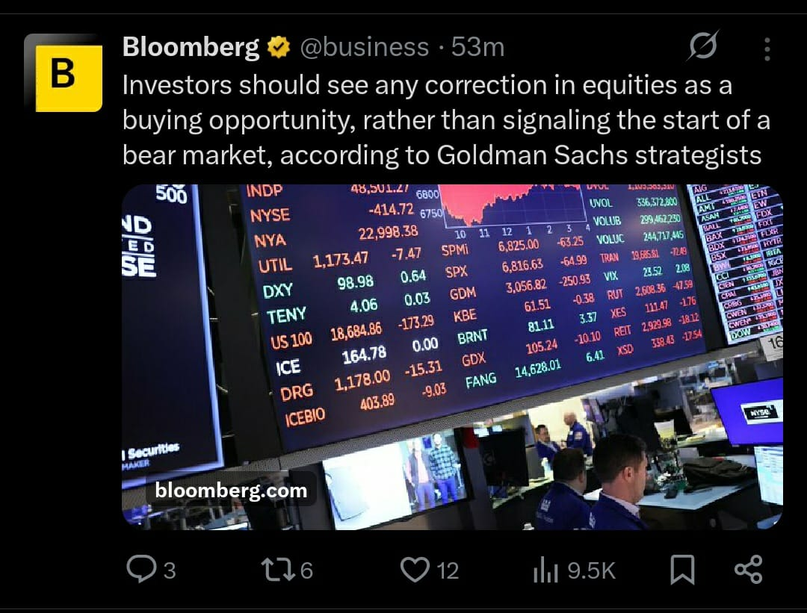
When you see such things, turn around and RUN away like crazy.
Someone needs a buyer to exit their positions.
Don't be one of them.
6:24 pm
7 March 2026
Konal
<Media omitted>
Yesterday, a friend told me in a dejected way that his MF returns for last 2-3 years are almost nothing, if not negative.
Now look at the top markets listed above . And the returns gave.
Is the the markets fault that he did not look outside India ?1:36 pm
Konal
And now with the tech and options available, you not knowing how to invest in these or using this information is either your laziness or lack of value for for your hard earned money !
As always, the choice is yours as no one else cares for your money more than you do !1:38 pm
Konal
<Media omitted>
When the war started a few days ago, I told someone that markets are now immune to any physical war or damage and will digest anything easily .
The only thing that can break the spine is any financial issues which may arise out of these war like conditions . I think the issues were always brewing and the war is just a bigger distraction to publish these news . I think you get the point
Markets won't be able to digest a financial distress during these times.
And, anyways, Bad things might /may/can/do happen below the 200 day moving average2:17 pm
10 March 2026
Konal
NO !
A jump in the markets today on the news of US trying to back off a bit does not mean things are normal again.
We are once again in a news driven markets. One day ceasefire, next day escalation.8:43 am
Konal
The best approach during such times is to use the smart SIP approach that we offer.
An example of smart SIP : Buy on all Red days below the 200 sma.
You cannot imagine how simple yet effective such simple approach is for long term investors <This message was edited>8:47 am
Konal
📊 How many of you are already anxious that yesterday was the market bottom and if you don't buy now, you will miss the once in a lifetime opportunity to catch the bottom ?
◯ I did start thinking (2 votes)
◯ The thought didn't cross my mind (4 votes)
◯ I don't really care (3 votes)
10:54 pm
12 March 2026
Konal
Interesting responses.
Here is something for everyone.
Option 1 : You are the eager types. And mostly will feel bad if you don't catch the bottom. Best is to invest very small packets every other day so you feel good later
Option 2 : while it is ok not to worry about bottom, you should not loose focus and miss the perfect opportunity when the time is right. Too much pessimism is also not good.
Option 3 : No advice for the Rich and famous who doesn't care what the market is doing currently or will do later 😀.12:12 pm
Konal
MARKET BOTTOM :
Let's see if we can identify the bottom. Process is listed below. Will give it one point at a time.
1. The low of the day which can be a possible bottom needs to hold for next 4-5 days at the minimum.
Today market made a low which is the lowest in last many weeks or months
If this holds for 4-5 days, this can be a potential bottom.
Let's see. If we satisfy this point in the 4-5 days, then will tell the next one2:16 pm
17 March 2026
Konal
If we close like this, today will be day 1 of yesterday's Low being defended.
Need 3-4 more days where the low is not taken out <This message was edited>1:47 pm
18 March 2026
Konal
<Media omitted>
Nifty has fallen 13% and up by 3.
Control the urges still.
IF The next journey will be 30-40% , leaving a few percentages for confirmation is not a big deal ....11:09 am
Sgsits Vijay Sahny joined using a group link.
Campion Ankit Sen joined using a group link.
Konal
Market bottom :
Day 2 where the potential market bottom/ low is defended.
The close could have been better and higher, but it is what it is.
2 more days and we move to the next rule.4:34 pm
Konal
USD-INR :
Most like usdinr is heading to 96-97.
If you have plans to bring back any usd, might want to stagger it a bit.
Just my hunch.
But let us ask the expert.
@SURUCHI , what's the 3-4 month target for usdinr as per you ?5:42 pm
19 March 2026
Konal
Market Bottom :
Even though today seems very bad,and your portfolio would reflect it, if we close around here,the Potential Low is still defended. So we HAVE to count today as day 3.
Rules are rules. No scope of emotions.
And these rules save you from hasty entries and friends desparate to find the bottom at each dip 😀.
The best part is, those friends and the social influencers will be right finally.
But that finally and this potential bottom could be far away2:50 pm
Konal
OOPS 😀. I said the above too soon 😀
We have a new low . Count resets .
I won't do this counting everyday now and bore you uninterested people 😁.
Next rules when 4 days are done defending the new potential low3:02 pm
20 March 2026
Konal
The markets are STRUCTURALLY BROKEN ( Price chart wise )
It will take time to repair itself.
Be patient before jumping in. At least dip your toe first before deciding to take the dip.
Only 18-24 month horizon investments can be tried. These too in STAGGERED way.5:16 pm
Konal
There are tons of idiotic influencers online who will start promoting buy this etc the day markets move a little.
Please be good to your friends and ask them to join this boring but realistic group, if they care for their hard earned money.
Might save them some money and tons of anxiety.5:19 pm
Konal
Posted this two weeks ago .
See what happens
If you don't take me seriously 😂😂😂.
Just kidding ! Or am I ? 😀😀
Too much free time nowadays .5:23 pm
21 March 2026
Konal
GOLD & SILVER : another 4-8% dip in gold and silver and they will again enter the buyable territory . Keep an eye out12:03 am
Konal
<Media omitted>
Left is India. Right is USA broader markets.
While US markets are also below the 200 MA, it is the first time it is doing so ( check the marked arrows on both charts )
Will it follow the Indian market trajectory in the next 60 days ?1:01 am
24 March 2026
Konal
Nifty is at a place from where it bounced an year ago. So you need to be both optimistic and fearful at the same time.
Is this the bottom ?
If you follow news, you will change your views twice in a day.
Just follow the Market Bottom rules 🙂
Today is day 1 of potential bottom at yesterday's low.1:15 pm
27 March 2026
Konal
You deleted this message3:59 pm
Konal
MARKET BOTTOM :
Bad and sad as it may look, today is Day 3 where the Potential low was defended.
Now to the second condition.
Provided the low is defended, we now need
1. A BIG GREEN day on NIFTY and Broader market in the next 10 days ( sooner the better ). Can be Monday as well.
2. At least a 1.5 - 2% kind of day and
3. The price has to close at the highs.
This confirms the hypothesis that the market bottom is done for short term and money can be added.
If in case the market breaches the penitential low at any point in time, the cycle begins all over again 🙂
In current scenarios, even if all conditions are met, the chances of markets again going down are more ( external factors ).
Once we get such a day, will let you know the next steps 🙂4:04 pm
Konal
<Media omitted>
It is never advisable to have a SIP running from the day you start earning till your retire.
What we’ve been taught is almost wrong 🙂
You cannot time is perfectly, but you can still adjust based on market phases !
As always, the choice is yours !4:18 pm
29 March 2026
Konal
📎 Media not available5:52 pm
30 March 2026
Konal
We have a new low today 🙂. Count resets. No addition of funds
Money saved is money earned10:09 am
31 March 2026
Konal
<Media omitted>
Nifty returns : Current and Historical ..8:24 pm
Konal
<Media omitted>
Smallcaps .... Is it a surprise that they did the best ? We have been adding ( or atleast asking you to add ) to them from last month8:25 pm
2 April 2026
Konal
Today is a new low. Counts start.
But , today can be a short term bottom.
But confirmation of the hypothesis only after 3-4 days2:09 pm
7 April 2026
Konal
day 3 today.
We need a biggg green day after tomorrow while the low is protected.
You can buy in small amounts even now .. but if the low goes, the trade or position goes .2:03 pm
Konal
No one knows if we ar heading lower or new all time high.
We work with probabilities and this is a high probability approach. But this too fails 40% times2:04 pm
Konal
Even if i am right about this as short term bottom , please understand that markets are living under the 200 moving average.
Bad things can happen anytime below 200 ma.
Be optimistic. Don't be over enthusiastic and for sure don't be impatient.
To curb FOMO, what looks great to you , add 1% , 2% of what you wanted to buy for. <This message was edited>6:37 pm
SURUCHI
<Media omitted>
With such Tweet , I don’t think any where bottom is closed by . If you see properly there is hardly any strength. I feel what happened today is just a dead cat bounce . Please don’t be positive hope. See charts u will get lot of clarity .7:26 pm
8 April 2026
Konal
Day 4 .
Good thing : We wanted 1-2% rise but markets opened 3.5%
Bad : It opened like this on news in an abnormal fashion. Now things are abrupt. No one likes abrupt.
You cannot and should not go all in. Today is a likely start for an upmove. How much up and for how long, no ones knows.
But the Low on Nifty ( 22150-22300 zone ), no is a formal low again which you can plan investments and trades slowly as per your system. Do spread it out
If Nifty goes below 22700, again become skeptical. Step back .. observe and plan.10:13 am
Konal
The news on the way will keep coming on both sides. All you need to worry about is the levels I have mentioned above.10:14 am
Konal
When i stated this and around that time, I even cashed out my investments. Just rules.
Now I am again 20% invested. And i saved myself the frustration of living and seeing a fall in portfolio for last one month.
We are still below the 200 MA. Bad things happen below 200. If you have an NEED to invest at possible bottoms, prefer funds and etf. Avoid stocks when markets are in poor structure.
Enough gyaan for a day for free. 🙂 Do go back and read all messages starting from Mid Feb if time permits10:18 am
Konal
Few good things as of Todays close :
1. Markets closed towards the top rather than slipping as seen in the past.
2. Oil cracked
3. No one is ready to believe the news of ceasefire after multiple heartburns 🙂. There can be more for sure
Since today we met the 1% + green candle rule after 4 days of lows being defended, we have a valid setup.
IF nothing, atleast start thinking about buying being positive ( or less negative)
The move can last till tomorrow or an year. No one knows.
What we know is where and when we need to get cautious and exit from the new positions if the markets were to crack again.3:12 pm
Konal
These are slightly long but important messages. How you use them is upto you3:12 pm
SURUCHI
Kindly share the stks name where to invest .4:00 pm
Konal
Madam ji, sabh yahin bata doonga toh mera paid automation kon join karega 😁😁.
As for others, this is called ragging of a newbie (me ) by a market veterans of 20 years. The lady posting here is a very seasoned trader. While she posts rarely, do not ignore her words6:39 pm
Konal
I usually refrain from getting politics into this channel, but off late, and after listening to this video, i feel Mr. Trump isn't a total nutcase, probably way smarter than the world thinks.
https://youtu.be/xrmERlHUqBk?si=XfSlF2wlVGPOAK4m <This message was edited>9:31 pm
9 April 2026
Konal
The best thing you can do now is to AVOID News .
Just keep a track once a day for the below price points on Nifty:
Be careful level : 22700
Prepare for bigger fall level : 22100 - 22200
Next update only when anything changes substantially...
Enjoy !12:45 pm
12 April 2026
Konal
I have always maintained that an external war won't be the reason of US market correction.
Something like this maybe1:21 pm
Konal
📊 What do you think is the purpose of this news ?
◯ To keep you fearful and not invest while market moves up,and then create FOMO and late entries (5 votes)
◯ To depict the real situation that the rich now benifits from the fall so market may fall. (2 votes)
◯ This news is issued in public interest (0 votes)
1:24 pm
13 April 2026
Konal
All movements are solely based on news. Without any rhyme or reason.
If you are starting investment in a new cycle, go slow.. but don't miss.10:14 am
Konal
One sided
But everyone skeptical about the news timing may also consider that we are below 200 ma 😀
Bad things happen below 200 .
Now you know why competing against the rich is tricky. 😀😀10:15 am
Konal
just one more thing to add here. This is a US markets related news. But US markets are above their 200 MA 🙂 .
Indian markets are way below 200.
So with all these data points, think of the possibilities ... helps to plan better1:15 pm
15 April 2026
Konal
Nothing much to update.
- As long as the key levels mentioned are held, we are ok.
- Still below 200. So careful but optimistic is the word
- Small and microcaps are performing better than large caps. Have been asking everyone to SIP the DIP in these specific categories from Feb onwards .
So overall, now waiting for a news to shakeout the late comers who did not trust the process 😀😀12:15 pm
16 April 2026
Konal
Till we hold the levels, days like today should be used to add to your positions.
Keep a track of the new positions, if we breach the lows or levels we discussed earlier, that's an exit sign... even for long term newly added positions that are in a loss ( if in profit, keep till they come back to their buying price )12:49 pm
Mikku
This message was deleted1:12 pm
Konal
In case someone wants to open an account in India to invest directly in the US, you can try Vested. I have opened one recently there. Seems ok.
The referral link below. Don't even know if I get something for this 🙂
https://refer.vestedfinance.com/KOGO221002:53 pm
18 April 2026
Konal
📎 Media not available9:37 pm
Konal
This is the main reason why you should avoid Indian ETFs to invest in global indices or stocks.
The prices are just not a true reflection of the underlying index.
Hence, i was forced to open the Vested account ( link above ).
If you have a decent corpus, don't be averse to global investments.
But do try to do your own research on taxation and product to use to invest9:39 pm
21 April 2026
Konal
Never let anyone tell you that you cannot time your investments.
Follow the process we discussed here and you should be able to identify posible market bottoms in 2-3 attempts, unlike some people who call every bad say as a bottom 🙂.
Trust me, it is easy to identify the market bottoms, but what you do once you know it is the tough part !6:11 pm
Konal
Some people are calling it a relief rally, some people are expecting the markets to fall again.
No one knows anything. All we know is :
1. We have the levels below which the bottom is null and void.
2. Markets are still below 200 . But today it went above the short term 50 day MA .
3. Small and Micro caps are outperforming the large caps ( use Mutual Funds to play this )
4. US markets is super strong. Do not look for artificial weakness. When the weakness is real, the key MAs will be breached
5. Make sure that most , if not all, of your SIPs are done when the markets are below key MAs and all the time ( as taught to us ) . You loose the avg price advantage6:18 pm
22 April 2026
Tcs Deepak Singh joined using a group link.
Konal
Since i did not have any important update, some pass for now.
In a day or two will provide some information how to add while the markets come down a bit after this move. Stay tuned. It would be important else you will just keep waiting to build up positions if you haven't done that yet8:19 pm
Konal
Do you know why i shared this information ?
Because today the world has changed a lot . And if you just keep living in a a false impression that investing just in India is enough, look at the table below :10:50 pm
Konal
<Media omitted>
Even our good for nothing neighbour surpasses us and many others 🙂.
ETFs for all these indices are listed in the US markets. Do some research . No more on this topic going forward. If this does not change your perspective, i doubt anything will 🙂10:53 pm
24 April 2026
Konal
We have automated strategies to manage investments. For those you don’t, in phases like this (up move with small pullbacks), you can follow either of these approaches:
1. Add on red days around 3 pm (buying the dip)
2. Add on days where today’s close is above yesterday’s high (buying strength after the dip)
3. You can always try our automations 🙂
Over time, the results aren’t very different — it’s largely a matter of personal preference and comfort.
But keep this in mind:
1. We are still below the 200 MA
2. Have clear levels where you stop adding and wait for a new base — avoid endlessly averaging down
Have a good weekend 👍11:04 am
Konal
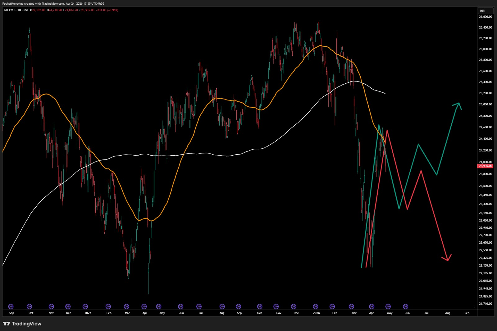
Frankly, I feel we are at that stage in the markets where any of the above scenarios might play out, GREEN is bullish scenario, while RED is the bearish one.
You might notice that till about sometime, the trajectory is or could be the same in both. It the move after the current fall ends that decides if the bad is behind us or if there is more pain for your portfolio ( if solely built on hope )
Current situation :
Short term - UP Trend
Medium Term - Sideways to down-ish
Long Term - Downward
Lets see ( and honestly hope ) if the medium term improves in the next couple of weeks
5:41 pm
Konal
<Media omitted>
Some forward, but I too get asked this quite often 🙂5:48 pm
27 April 2026
Konal
While the price dancing around 50 MA is very common, it should not spend a lot of time underneath it in a strong market.
Bullish till our identified levels hold .. but careful in the short term.
Just have a mental plan in place .... IF this then that11:36 am
29 April 2026
Konal
<Media omitted>
This is index of stocks where FPIs are invested or invest.
IT is slowly changing the character and trying to move higher .
May mean that the FPI money is slowly moving in ....
A hypothesis for now ... not sure when the data comes out to confirm these claims12:21 pm
30 April 2026
Abhishek Mishra added Lucy
10 May 2026
Kripal Pariyangat joined using a group link.
Konal
Markets are still dancing around there 50 MA. But there is something interesting happening .
There is a divergence between Nifty and Nifty 500 ( broader market.
While Nifty is below 200 MA, Nifty 500 is now above its 200 MA ..
Going forward, I would only talk about Nifty 500 ... since most of us have stocks that belong to the broader market and not just the top 50 Nifty 50 names ......4:11 pm
Konal
A lot of you got it Right ... 🙂
Hence, do not trust the news and become the much needed liquidity for the biggies to enter or exit 🙂4:14 pm
Konal
Now that we have learnt how to identify market bottoms , how many of you would be interested to know and learn about :
Timing Your Mutual Fund investments
Planning for a small 20-30 minute informal session on this based on what i feel is a good approach to timing MF SIPs .
Your friends can join too if they are open minded. Add them to this channel . I will only post details here.4:22 pm
Konal
📊 Interested in MF timing session ? Around late May 2026
◯ No (1 vote)
◯ Yes (11 votes)
4:24 pm
11 May 2026
Konal
Not the best closing below 50 MA while we are still below 200 MA ..
Markets are in a range.
Totally dependent on global news and drama.
Out Market bottom levels are intact but some initial weakness is visible.
Be nimble and detached from trades. Love only profitable trades . Be ruthless with the ones in losses .3:26 pm
12 May 2026
Konal
Looks like there is enough interest. Only one person was brutally honest 😀😀
Let me try to set up something.
Since i am now not used to setting up online meetings 😁😁, will ask for help from willing people1:34 pm
Konal
Another bad session. We are inching closer to the invalidation level for the current bottom.
Any position bought after bottom confirmation, needs to dealt with practically. Dimaag se. Not Dil se.
Etf are still ok to hold if you are averse to selling.
Stocks, you need to have a clear plan. And Hope of the price rising someday is not a plan 😀3:20 pm
Konal
The first part of this is playing out.
Let's see which direction we end up in .3:23 pm
14 May 2026
Konal
Days like today are the kinds that are used to defend key levels ... The levels defining the bottom were closed but still not breached .. 🙂 Nice tug of war ...1:37 pm
16 May 2026
Konal
<Media omitted>
When someone managing so much money in a fund has only 10 stocks, do you think it is a good idea for us to own more than 5-7 Mutual Funds ?
Over diversification of already diversified assets might not be the best approach3:07 pm
17 May 2026
You changed this group's icon
19 May 2026
Konal
Don't want to jinx it, but have to give some points to the Indian markets for fighting hard not to fall . Looks like the only casualty of this fight between the bulls and bears has been me 😂. Horrible last few days trying to figure out a possible direction market wants to take. Got beaten up on both sides 🙂
There are enough bad news already floating around and we are still holding up ( not the strongest, but still ) We just need one good news to kick start the upmove .12:08 am
Konal
The few of you who read what i post might remember that we successfully identified the bottom of our markets in real time with rules.
Both Nifty 500 and S&P 500 ( US ) confirmed the bottom on the same day.
While we have not invalidated that bottom, yet, look at the performance of both the indices.
This is known as relative outperformance. From the day of confirmation till today,
* India up 1.7 %
* US up 8.7 %
So don't think things do not work. But just because bottom was confirmed, does not mean the index will fly. It will only fly if it is relatively stronger than the others to invite capital.8:01 pm
Konal
<Media omitted>
One key difference was :
US was above 200 and 50 MA while we were not8:03 pm
21 May 2026
Konal
For those of you who can trade in the US Markets, EWS ( ETF for Singapore is looking ripe for some movement.8:01 pm
Konal
I posted this link in the past in case anyone wants to open an account from India.
IND Money is another option i think. No experience of that as of now8:07 pm
Konal
Market Overview :
Long Term Negative ( Best for accumulating long term ETFs / Mutual funds in staggered way)
Medium Term - Sideways with a negative bias
Short term- Negative-ish
We are below 200 and 50 and spending too much time below 50... The buyers are missing as of now.
If anyone here likes to trade for shorter timeframes, just be mindful of these facts...
We need a good news and we need it soon if things are to improve .8:12 pm
22 May 2026
Konal
You deleted this message12:20 pm
Konal
Sorry, the message was for the people who have automation on.
But since I sent it here, lemme tell that We are testing the waters with Infra, Energy and Pvt Bank ETFs12:23 pm
Konal
<Media omitted>
While I was doing my weekend analysis, came across the Mid Small Health index, that comprises of smaller companies in health and pharma ....
There is no direct ETF for the same but these Mutual funds can be used.
The regular big Pharma names can be captured in the ETFs available
A Long term play. Want to know the best time to invest ? Wait for the planned MF timing session ... i guess that should answer this10:14 pm
24 May 2026
Trilok joined using a group link.
Tcs Sada joined using a group link.
Atul Satish Gosain joined using a group link.
Phani joined using a group link.
Adobe Mohan V joined using a group link.
25 May 2026
Konal
<Media omitted>
As some of the lovely people who joined today cannot go through the past post, i thought of asking Claude to summarise the past posts ... Will share the detailed reports later but liked this simple slide a lot that captures the year gone by !
Seems like nothing much happened from these and exactly, nothing really happened 🙂 .
Even in a flat market, we caught 2 minor sector cycles ... and that's not bad !!1:23 am
Adobe Akash joined using a group link.
Adobe Shirish H joined using a group link.
Cts Gaurav joined using a group link.
Adobe Mohan V left
House @ Sanjay P joined using a group link.
Konal
Today with some good buying across the board after the news that market was waiting for, the primary index went above our 50 Day ma.. ..
For any trend to sustain, the next big hurdle is the long term sentiment indicator, the 200 day ma.
For those of you who are doing smart SIP, a marginal increment can be done now. Trend don't change so soon. So you have time to build positions5:28 pm
26 May 2026
Konal
<Media omitted>
This is the chart of the Microcap index.
While Nifty is the most famous index to make or break the sentiments, it hasn't really moved a lot, while the Small and Micro cap stocks are slowing inching higher from the market bottom we identified.
The same would, rather should ,reflect in your MF portfolio as long as you are invested in the right market cap funds.
From Feb 2026, I have been advocating small and micro caps over large caps.4:16 pm
Konal
We will have this " Timing the Mutual Fund Investment" session on Saturday 11 : 15 AM . Should be max 30-45 min session.
I only have google meet access so will use that for the session.
The session cannot be recorded due to free Google Meet limitations.
Be there or Be square .
You can bring in your friends as well. Ask them to join this group so they can get the updates4:23 pm
Adobe Deepa joined using a group link.
Konal
Those of you who are interested in attending the Timing the MF session, please fill out the form below. Will use the details to send the meeting details.
Forms Link : https://forms.gle/6UsDJMBnDZA8WkuP97:15 pm
Konal
If you want to share with others, please share the below message for some context.7:17 pm
Konal
A good friend of mine, an erstwhile IT chap, has been working with algos and automation in stocks for a while now. Since he gets a lot of questions on timing the market, he is conducting a small session for the same. If you are interested, please fill the form below and join the session on Saturday 30th May at 11:30 AM.
Thanks !
Google Form Link : https://forms.gle/6UsDJMBnDZA8WkuP97:17 pm
Adobe Vinay joined using a group link.
+91 98801 37505 joined using a group link.
+91 82389 68220 joined using a group link.
+91 84509 81243 joined using a group link.
27 May 2026
Konal
Welcome to the new members who joined 🙏🏻Hope you enjoy the commentary here. No tips or stocks mentioned here . More about timing the investment the smart way in the right instruments.12:26 am
Konal
So far 5 people have shown interest in the MF session. That is too low for me to spend time on it .
The session will happen if I get at least 12-15 interested folks by Friday evening. Else will just give the approach here on the group. Saves time for everyone12:26 am
Konal
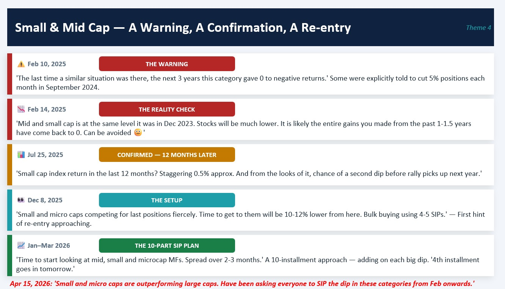
I shared the entire chat of this group for claude to find out themes ..
Even I am pleasantly surprised... not by what it did ... but how nicely things moved they way we predicted .
Situation changed, we changed ! Be fluid !
All AI generated based on my posts
12:31 am
Konal
<Media omitted>
This for Gold and Silver . Not bad .... but could have been better .
All AI generated visuals and text based on my posts ...12:32 am
+91 79790 75691 joined using a group link.
+91 99300 66038 joined using a group link.
+91 99300 66038 left
+91 96536 06579 joined using a group link.
Konal
As a theme, Hospital stocks are looking interesting .
Might be a good idea to check what these funds hold and deploy some amount2:57 pm
Konal
18 responses 😱😱 Abb toh session karna padega 🙂6:56 pm
28 May 2026
+91 98800 44146 joined using a group link.
+91 82389 68220 left
29 May 2026
Konal
The session details have been sent to everyone who has shown interest.
People can register anytime till the session starts.1:13 pm
Konal
Market update:
1. Very very boring
2. Fully news driven
3. Below 200 MA. So warrants cautious approach
4. Above 50 MA, so careful optimism in the short term
Portfolio, if comprised of right stocks only, is moving up slowly. Broad based movement is not there.
Have a wonderful weekend.1:17 pm
Konal
Can anyone please confirm that they recieved the invite for the same ?5:30 pm
30 May 2026
+91 97318 23232 joined using a group link.
Konal
Guys and girls
Please find the meeting details below. The same has been shared with everyone who filled the form.
Anyone with the link can join the meeting. Please feel free to share the same details with others if you wish.
Session : Timing Your Mutual Fund InvestmentsDate : Saturday 30th May 2026
Time : 11:30 AM - 12:15 AM
Meeting link : https://meet.google.com/ajx-jfaf-yqg
Thanks & Regards10:52 am
Konal
📎 Media not available12:13 pm
31 May 2026
Konal
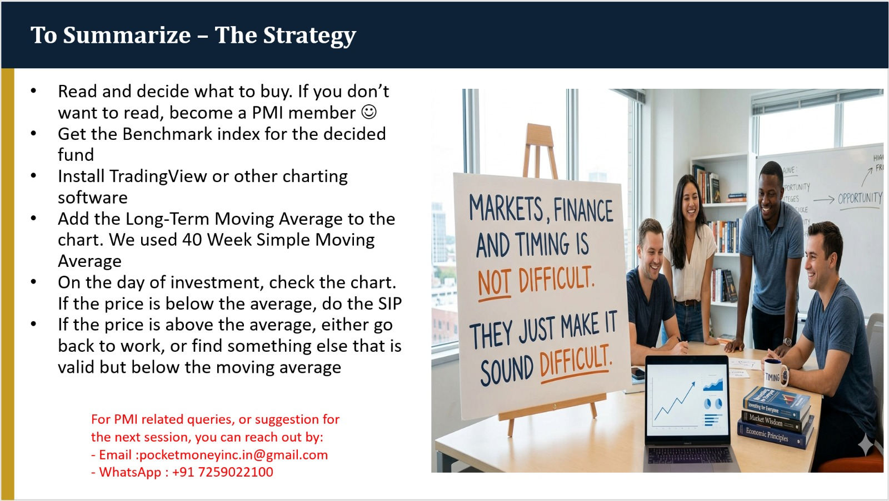
The summary from the session. And with this we close the MF timing thread.
5:18 pm
1 June 2026
Konal
Back to #MarketUpdates.
The dance, on global tumes, around 50 ma continues. But now we are below 50 and 200 both.
So more careful.
Honestly, hard to find anything optimistic about markets right now. And trust me i tried a lot 😂😂.
Let's see. But time to tighten the stoploss levels for things you bought recently. Small loss is the best loss2:49 pm
Konal
<Media omitted>
Relentless selling by the vedesii biggies ....
This is yearly and we are already way higher than the max sold for other years .
Kahan se market upar jayega bechaara 🙂6:02 pm
Konal
Another interesting development ...
The banks and financial sector worldwide is likely setting up for a move.
Maybe, just maybe , it is possible that interest rates might be increased in weeks or months. Smart money always buys before the event.
If that happens, banks and low debt sectors like IT might get back into the game. But for Indian IT, AI is a strong headwind ..... Complex !
Overall, higher cost of capital is not good for broader markets and portfolio.
Time will tell, as of now it is just a hypothesis6:07 pm
3 June 2026
Konal
<Media omitted>
Frankly, I feel we are at that stage in the markets where any of the above scenarios might play out, GREEN is bullish scenario, while RED is the bearish one.
You might notice that till about sometime, the trajectory is or could be the same in both. It the move after the current fall ends that decides if the bad is behind us or if there is more pain for your portfolio ( if solely built on hope )
Current situation :
Short term - UP Trend
Medium Term - Sideways to down-ish
Long Term - Downward
Lets see ( and honestly hope ) if the medium term improves in the next couple of weeks11:42 am
Konal
had shared this post mid of April on possible trajectory.
This is playing out exactly like we predicted. Sent this on 24th April
The retracement is almost complete.
Now the real test starts if we go down on no news or some news OR we go up a little on some good news .11:43 am
Konal
We are probably 100/200 points away from invalidating the short term bottom made in Early April.
So let's see what lies ahead. I am careful with my open positions that are in profit.
Loss making positions are all gone. Possible trajectory in the pic below11:50 am
Konal
<Media omitted>
White is actual current. Rest are possible hypothesis.
P.S : We are below 50 and 200 as we speak11:52 am
Konal
<Media omitted>
None of them probably attended my session and most likely have been investing blindly from ever 🙂
No complains , but the worst time to stop the SIP is now5:34 pm
4 June 2026
Konal
The only thing Indian markets do not want right now is a swift fall in US Markets.
Slow gradual consolidation is ok. Actually better for us.
Nonetheless, we are still below key averages. Living on the edge !8:40 pm
6 June 2026
Konal
<Media omitted>
😂😂😂😂 . Bass .. yehi bacha thha 🙂. The exact thing i was hoping against !8:10 pm
8 June 2026
Konal
Not sure if the middle east escalation is happening right now to justify the falling markets or markets are falling due to the escalation.
I will go with the former10:15 am
Konal
<Media omitted>
Kinda of made some sense to me 🙂7:18 pm
9 June 2026
Konal
Yes .. some day some of them will give return.
Yeh some day some of them will become multi-baggers
Yes, some of them give dividend..
But look at the list of the biggest stocks below .. and sometimes ask yourself, if your money outperformed or under-perform, if you listen to the above narrative12:19 pm
Konal
Reliance: No return in 4 yrs.
HDFC Bank: No return in 5 yrs.
TCS: No return in 7.75 yrs.
HUL: No return in 6.5 yrs.
Infosys: No return in 5.5 yrs.
Maruti Suzuki: No return in 2 yrs.
Adani Ent: No return in 3.75 yrs.
Axis Bank: No return in 1.5 yrs.
M&M: No return in 1.75 yrs.
Kotak Bank: No return in 5.5 yrs.
ITC: No return in 9 yrs.
NTPC: No return in 2 yrs.
ONGC: No return in 12 yrs.
Ultratech: No return in 2 yrs.
HCL Tech: No return in 5.75 yrs.
Coal India: No return in 2.5 yrs.
Bajaj Auto: No return in 1.75 yrs.
HAL: No return in 2 yrs.
Bajaj Finsv: No return in 4.75 yrs.
Dmart: No return in 4.75 yrs.
Nestle: No return in 2.5 yrs.
Powergrid: No return in 2.5 yrs.
Asian Paints: No return in 5.5 yrs.
Adani Green: No return in 4.5 yrs.
Eternal: No return in 1.75 yrs.
Hind Zinc: No return in 2 yrs.
Wipro: No return in 5.5 yrs.
Indian Oil: No return in 9.25 yrs.
Adani Energy: No return in 5 yrs.
SBI Life: No return in 1.75 yrs.
Varun Bev: No return in 2.5 yrs.
Indigo: No return in 2 yrs.
Jio Fin: No return in 2.75 yrs.
Trent: No return in 2.25 yrs.
Tata Motors: No return in 2.75 yrs.
Tech M: No return in 4.75 yrs.
Cipla: No return in 2.5 yrs.
Tata Cons: No return in 2.5 yrs.
Dr Reddy: No return in 2.5 yrs.
Max Health: No return in 2.5 yrs.
Buy good companies isn't enough.
You need to time your entries well.12:19 pm
Konal
Data copied from somewhere.. so some here and there is possible12:21 pm
Konal
The reason I shared the above numbers is just to emphasize that with large or small caps, some degree of timing is important to generate results ... do not be averse to studying a little and trying to get the timing right ..
Buy right and then sit tight1:03 pm
Konal
Another brutal day in the US.
My post exactly a day before about US falling drastically wasn't fully random.
Timing dekh rahe ho ladke ka 😀😀10:21 pm
12 June 2026
+91 77603 43355 joined using a group link.
Konal
Just to get this out of my head.
While i have been giving updates on markets and general time pass info, would you people also be interested in Stock Tips ?11:55 am
Konal
I always wanted people to use PMI automation for stocks since that reduces the chances for human misses and emotions getting in the way . Hence, I avoided giving any stock names here. But not everyone is on automation.
Conditions being :
1. It won't be free. Simple refund rules will be there
2. I can only give entry and SL zone. And updates on SL and targets if there is a change. BUT the trade management is your responsibility
3. Losses are part of the game and stocks are relatively riskier than ETFs
4. Will only start if there is enough interest. Else we will revisit this some other time11:55 am
Konal
📊 Interested in Paid PMI Stock Tips & Tricks ?
◯ Yes (7 votes)
◯ No (0 votes)
11:57 am
Konal
Before putting a response, please do read the message above11:59 am
Konal
It is very obvious to think that today's news around middle east is timed for SpaceX.
Feels like. Maybe it is too .
But never let such media induced though process get in your head.
Look for structures. Do not be left out at the start of the trend due to these thoughts and then try to enter late under FOMO.2:24 pm
Konal
Small entries . Strict rules ... That's all it is .
We are not entitled to all these news .. we can only react ... just do not react too late due to the negativity around everything good.
Later in the evening i will post where the main indices are with respect to their2:24 pm
13 June 2026
Konal
Not many people really interested in this .. So will park this for the time being.
Will try and figure out something at a later stage. But something will happen for sure7:48 pm
14 June 2026
Konal
Been while we analyzed the US markets . Let us see what can play out.
This is just another hypothesis which we will refer to if things play like this ... else this shall never be spoken about again 🙂1:47 pm
Konal
The swift down move couple of days back was very similar to the Deep Seek news on 10th Oct 2025 .
The ellipse marked around that date is what happened after the news.
One attempt to move higher and then in a range for 6-7 months before a swift downmove.
My hypothesis is that we might have a similar move now. Possible future movement marked on the chart and possible timeline for the dip as well.1:58 pm
Konal
📎 Media not available1:58 pm
Konal
This scenarios is perfect for India ... as long as US does not crash or correct very fast, we will be fine.
Erratic but fine and slow upmove ( assuming no more bad news globally or locally )
The upmove may not be very broad-based. Could be contained to specific stocks or at max specific sectors.
Your returns will be muted unless you are part of these sectors.
If you are letting others manage your money, atleast ask them questions on performance relative or the section of the market that is performing.2:06 pm
Konal
<Media omitted>
I have been advocating Small and microcap segment from Feb onwards ... via Mutual Funds route
If you only look at Nifty to gauge the sentiments, you might feel nothing has happened. While the Microcap index moved 26% in the last 3-4 months ...2:08 pm
Adobe Rakesh B joined using a group link.
15 June 2026
Konal
Market trends do not change in a couple of days. Only news changes from bearish to bullish or vice versa each day .
1. No FOMO. If you are a long term investor and aiming for 40% move in index, a couple of % gone without you means nothing.
2. No News
Secrets to Peaceful life !12:36 pm
Konal
On 9th April, We identified two levels on Nifty that would invalidate the short term bottom created based on rules. If invalidated, they would require you to adjust positions taken recently( without fail ).
The most recent fall stopped at around 23000, an hence, the bottom stays intact.
The big boys who created that low are still alive and expecting more and not giving up yet.
It is your choice to listen to the news or track the biggies !11:27 pm
Konal
Also, another big positive now is Nifty is above the Orange line ( 50 MA ) .
While this is the case, avoid news and focus on buying.
Long term smooth and secular up trend is still a bit farther away. Time wise and market strength wise.
One checkpoint at a time11:30 pm
16 June 2026
Konal
Things are slowly falling in place foe the US Markets. Iran war never had any impact and most likely won't have any ever.
But, now everything is around FED and interest rate. That's the key.
Markets will be super happy with lower rates or atleast some hint or lower rates soon.
Apne ko bass itna hee pata hai .. For detailed and sansanikhez analysis, just to Twitter 🙂7:39 pm
+91 97419 11516 joined using a group link.
17 June 2026
Konal
Because of the limitations of a Whatsapp group, anyone joining now will not be able to see the old messages where we discussed a lot of things ...
So in case you want to ask someone to join please ask them soon so that atleast they have the messages , even if they do not read.
You can add members to this group yourself as well. Link below, just in case.
https://chat.whatsapp.com/G5tcXQVdQE2KFz0NA9O6vs12:13 pm
Konal
📊 What do you think will be the state of Indian Economy after 6 or 12 months, compared to now ?
◯ Better than now (7 votes)
◯ Worse than now (4 votes)
◯ Already bad, how much worse can it get (0 votes)
5:31 pm
18 June 2026
Konal
With all the chik chik around oil , Ethanol blending and geopolitical events, EVs adoption might be faster than initially anticipated.
There is an Index for EV related companies. Link below.
https://www.niftyindices.com/indices/equity/thematic-indices/nifty-ev-new--age-automotive
And there are 2 ETFs for this index.
And lastly, do your research , after AI there is no excuse not to.
P.S: The index is at a buyable spot and not in the news right now5:56 pm
Konal
<Media omitted>
One of the simplest and yet most successful rule for a Happy Married life is to keep quiet as much as you can.
Similarly, for markets ( investment and trading ) simplest rule :
If the markets are above the Orange line ( 50 ma) and White line ( 200 MA ), every down day is a day to invest. As long as the price is close to these lines and not very extended
This is Nifty 500 ... so overall markets are looking better than the large caps Nifty 506:14 pm
19 June 2026
Konal
Planning another FREE session on 'Identifying Strong Sectors For Investment in Current Markets'
We will only look at sector charts in this session to identify them based on simple rules.
Please feel free to send it to your friends who are keen to learn. Everyone is welcome.
Date : Sunday ( 21 - June - 2026)
Time : 11 AM - 11:45 AM IST
Duration : 30 mins for sesssion + 15 min Q&A
Location : Google Meet ( Session will not be recorded )
Meeting room detailes will be sent on email to the interested folks
To register, kindly fill this form : https://forms.gle/eKqnFMqoYQaTwbA46
Link to join the 'PMI-Market Updates' Whatsapp group for regular updates is : https://chat.whatsapp.com/G5tcXQVdQE2KFz0NA9O6vs
For queries, do send an email at : pocketmoneyinc.in@gmail.com6:55 pm
Konal
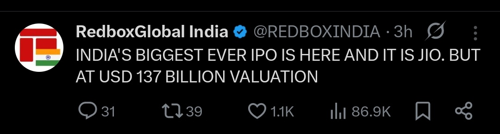
Wondering why Indian markets have started performing? 😀
For a successful ipo, market sentiments have to be positive.
Make hay while the sun shines ! #ConspiracyTheory
Happy weekend
11:59 pm
20 June 2026
Konal
Just a reminder for this session.
Please do spread the word .
These 30 minutes might change someone's investment journey 🙂4:34 pm
Konal
Very little interest for this session . Maybe it was a small notice.
Tomorrow's session stands cancelled.
We will plan it later with advanced notice.
Apologies to the people who showed interest9:16 pm